rm(list=ls())8 Remote sensing
8.1 Introduction
Remote sensing techniques, in the sense of gathering & processing of data by a device separated from the object under study, are increasingly providing an important component of the set of technologies available for the study of vegetation systems and their functioning. This is in spite that many applications only provide indirect estimations of the biophysical variables of interest (Jones and Vaughan 2010).
Particular advantages of remote sensing for vegetation studies are that: (i) it is non-contact and non-destructive; and (ii) observations are easily extrapolated to larger scales. Even at the plant scale, remotely sensed imagery is advantageous as it allows rapid sampling of large number of plants (Jones and Vaughan 2010).
This chapter aims at providing a conceptual & practical approach to apply remote sensing data and techniques to infer information useful for monitoring crop diseases. The structure of this chapter is divided into four sections. The first one introduces basic remote sensing concepts and provides a summary of applications of remote sensing of crop diseases. The second one illustrates a case study focused on identification of banana Fusarium wilt from multispectral UAV imagery. The third one illustrates a case study dealing with estimation of cercospora leaf spot disease on table beet. Finally, it concludes with several reflections about potential and limitations of this technology.
8.2 Remote sensing background
8.2.1 Optical remote sensing
Optical remote sensing makes use of the radiation reflected by a surface in the visible (~400-700 nm), the near infrared (700-1300 nm) and shortwave infrared (1300-~3000 nm) parts of the electromagnetic spectrum. Spaceborne & airborne-based remote sensing and field spectroscopy utilize the solar radiation as an illumination source. Lab spectroscopy utilizes a lamp as an artificial illumination source Figure 8.1.
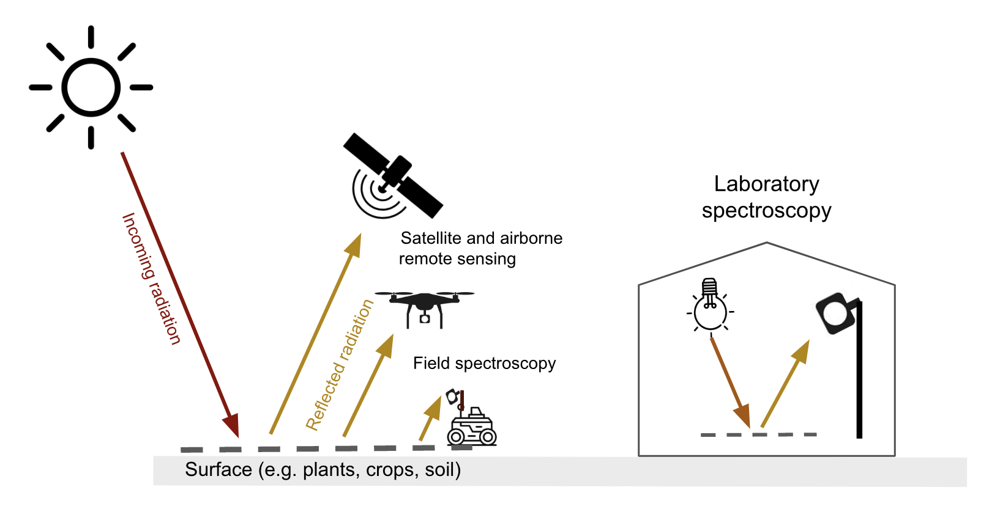
The proportion of the radiation reflected by a surface depends on the surface’s spectral reflection, absorption and transmission properties and varies with wavelength Figure 8.2. These spectral properties in turn depend on the surface’s physical and chemical constituents Figure 8.2. Measuring the reflected radiation hence allows us to draw conclusions on a surface’s characteristic, which is the basic principle behind optical remote sensing.
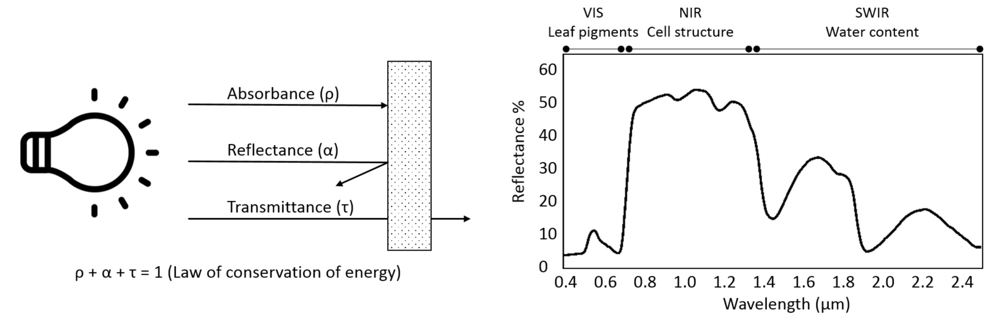
8.2.2 Vegetation spectral properties
Optical remote sensing enables the deduction of various vegetation-related characteristics, including biochemical properties (e.g., pigments, water content), structural properties (e.g., leaf area index (LAI), biomass) or process properties (e.g., light use efficiency (LUE)). The ability to deduce these characteristics depends on the ability of a sensor to resolve vegetation spectra. Hyperspectral sensors capture spectral information in hundreds of narrow and contiguous bands in the VIS, NIR and SWIR, and, thus, resolve subtle absorption features caused by specific vegetation constituents (e.g. anthocyanins, carotenoids, lignin, cellulose, proteins). In contrast, multispectral sensors capture spectral information in a few broad spectral bands and, thus, only resolve broader spectral features. Still, multispectral systems like Sentinel-2 have been demonstrated to be useful to derive valuable vegetation properties (e.g., LAI, chlorophyll).
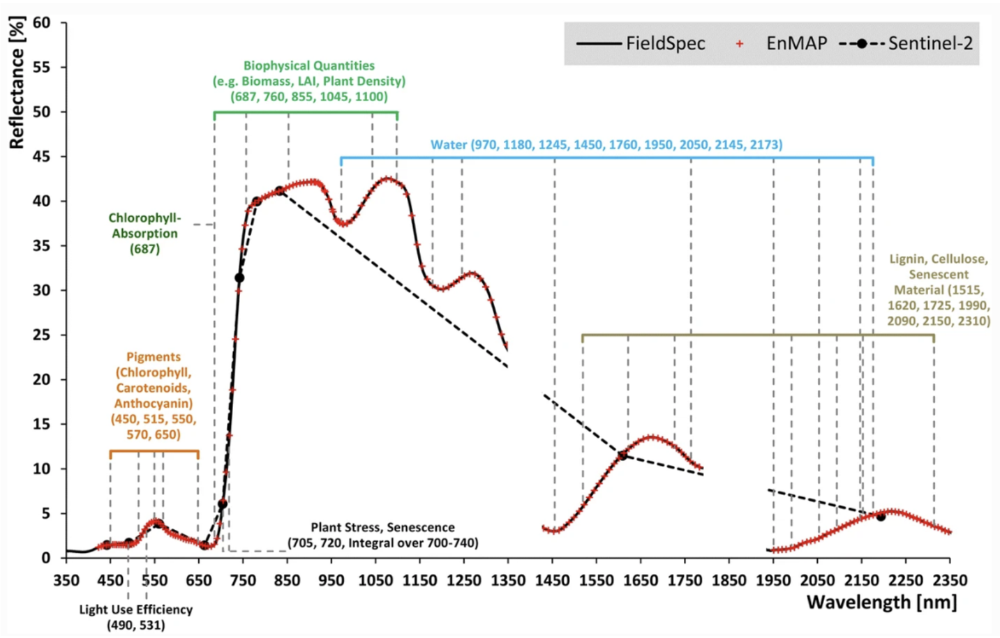
8.2.3 What measures a remote sensor?
Optical sensors/spectrometers measure the radiation reflected by a surface to a certain solid angle in the physical quantity radiance. The unit of radiance is watts per square meter per steradian (W • m-2 • sr-1) Figure 8.4. In other words, radiance describes the amount of energy (W) that is reflected from a surface (m-2) and arrives at the sensor in a three-dimensional angle (sr-1).
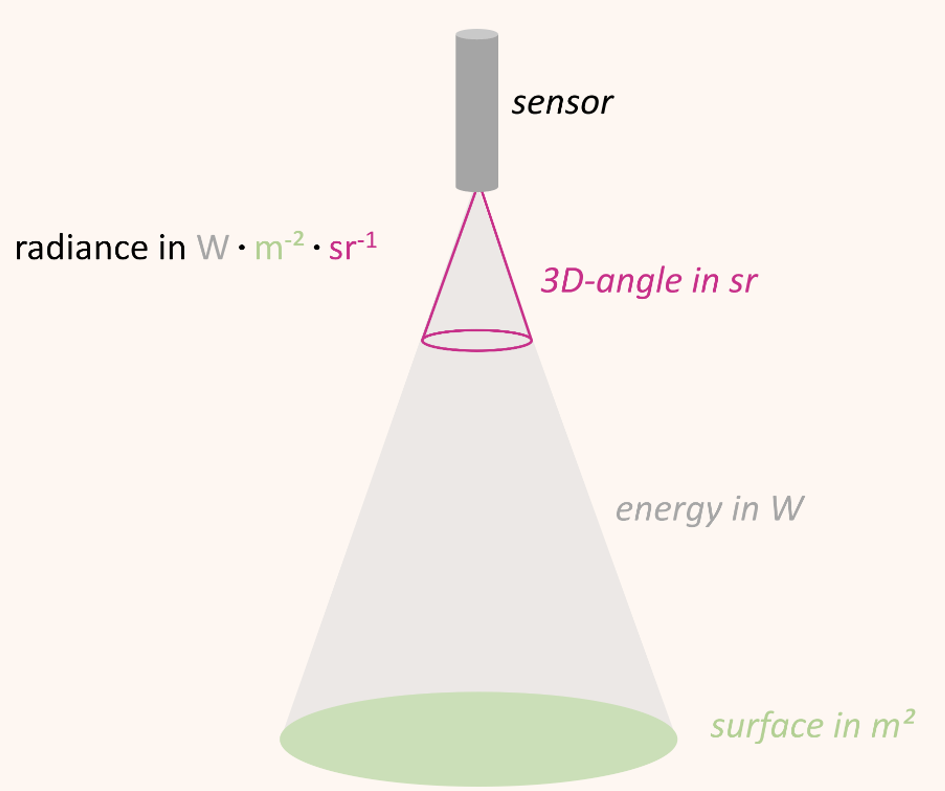
A general problem related to the use of radiance as unit of measurement is the variation of radiance values with illumination. For example, the absolute incoming solar radiation varies over the course of the day as a function of the relative position between sun and surface and so does the absolute amount of radiance measured. We can only compare measurements taken a few hours apart or on different dates when we are putting the measured radiance in relation to the incoming illumination.
The quotient between measured reflected radiance and measured incoming radiance (Radiancereflected / Radianceincoming) is called reflectance (usually denoted as \(\rho\)). Reflectance provides a stable unit of measurement which is independent from illumination and is the percentage of the total measurable radiation, which has not been absorbed or transmitted.
8.2.4 Hyperspectral vs.multispectral imagery
Hyperspectral imaging involves capturing and analyzing data from a large number of narrow, contiguous bands across the electromagnetic spectrum, resulting in a high-resolution spectrum for each pixel in the image. As a result, a hyperspectral camera provides smooth spectra. The spectra provided by multispectral cameras are more like stairs or saw teeth without the ability to depict acute spectral signatures Figure 8.6.
8.2.5 Vegetation Indices
A vegetation index (VI) represents a spectral transformation of two or more bands of spectral imagery into a singleband image. A VI is designed to enhance the vegetation signal with regard to different vegetation properties, while minimizing confounding factors such as soil background reflectance, directional, or atmospheric effects. There are many different VIs, including multispectral broadband indices as well as hyperspectral narrowband indices.
Most of the multispectral broadband indices make use of the inverse relationship between the lower reflectance in the red (through chlorophyll absorption) and higher reflectance in the near-infrared (through leaf structure) to provide a measure of greenness that can be indirectly related to biochemical or structural vegetation properties (e.g., chlorophyll content, LAI). The Normalized Difference Vegetation Index (NDVI) is one of the most commonly used broadband VIs:
\[NDVI = \frac{\rho_{nir} - \rho_{red} }{\rho_{nir} + \rho_{red}}\]
The interpretation of the absolute value of the NDVI is highly informative, as it allows the immediate recognition of the areas of the farm or field that have problems. The NDVI is a simple index to interpret: its values vary between -1 and 1, and each value corresponds to a different agronomic situation, regardless of the crop Figure 8.5
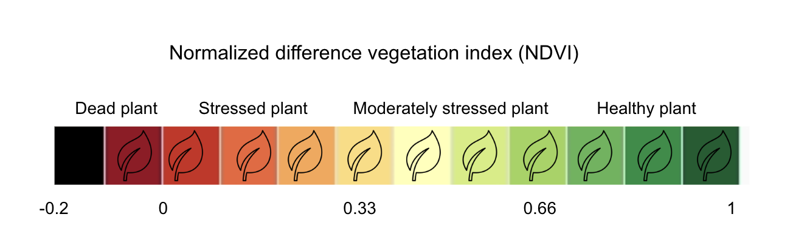
8.3 Remote sensing of crop diseases
8.3.1 Detection of plant stress
One popular use of remote sensing is in diagnosis and monitoring of plant responses to biotic (i.e. disease and insect damage) and abiotic stress (e.g. water stress, heat, high light, pollutants) with hundreds of publications on the topic. It is worth nothing that most available techniques monitor the plant response rather than the stress itself. For example, with some diseases, it is common to estimate changes in canopy cover (using vegetation indices) as measures of “disease” but this measure could also be associated to water deficit (Jones and Vaughan 2010). This highlights the importance of measuring crop conditions in the field & laboratory to collect reliable data and be able to disentangle complex plant responses. Anyway, remote sensing can be used as the first step in site-specific disease control and also to phenotype the reactions of plant genotypes to pathogen attack (Lowe et al. 2017).
8.3.2 Optical methods for measuring crop disease
There are a variety of optical sensors for the assessment of plant diseases. Sensors can be based only on the visible spectrum (400-700 nm) or on the visible and/or infrared spectrum (700 nm - 1mm). The latter may include near-infrared (NIR) (0.75-1.4 \(μm\)), short wavelength infrared (SWIR) (1.4–3 \(μm\)), medium wavelength infrared (MWIR) (3-8 \(μm\)), or thermal infrared (8-15 \(μm\)) Figure 8.6. Sensors record either imaging or non imaging (i.e average) spectral radiance values which need to be converted to reflectance before conducting any crop disease monitoring task.
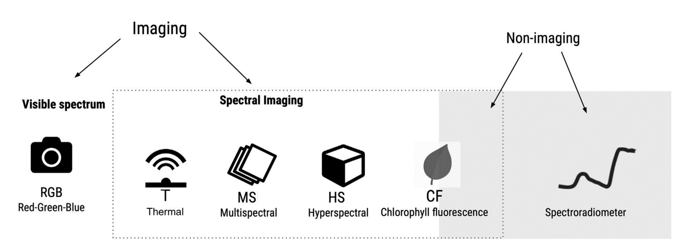
In a recent chapter of Agrio’s Plant Pathology, Del Ponte et al. (2024) highlights the importance of understanding the basic principles of the interaction of light with plant tissue or the plant canopy as a crucial prerrequisite for the analysis and interpretation for disease assessment. When a plant is infected, there are changes to the phisiology and biochemistry of the host, with the eventual development of disease symptoms and/or signs of the pathogen which may be accompanied by structural and biochemical changes that affect absorbance, transmittance, and reflectance of light Figure 8.8.
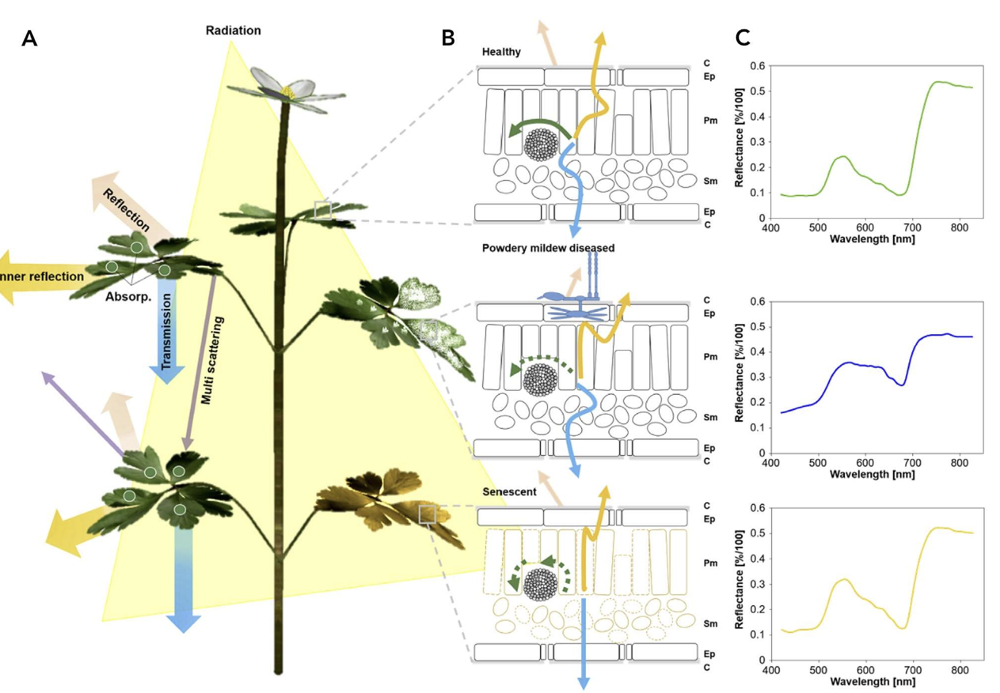
8.3.3 Scopes of disease sensing
The quantification of typical disease symptoms (disease severity) and assessment of leaves infected by several pathogens are relatively simple for imaging systems but may become a challenge for nonimaging sensors and sensors with inadequate spatial resolution (Oerke 2020). Systematic monitoring of a crop by remote sensors can allow farmers to take preventive actions if infections are detected early. Remote sensing sensors & processing techniques need to be carefully selected to be capable of (a) detecting a deviation in the crop’s health status brought about by pathogens, (b) identifying the disease, and (c) quantifying the severity of the disease. Remote sensing can also be effectively used in (d) food quality control Figure 8.8.
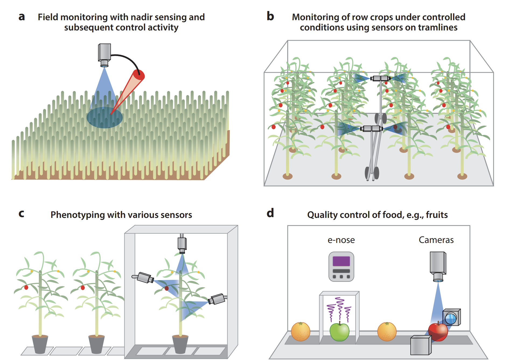
8.3.4 Monitoring plant diseases
Sensing of plants for precision disease control is done in large fields or greenhouses where the aim is to detect the occurrence of diseases at the early stages of epidemics, i.e., at low symptom frequency. Lowe et al. (2017) reviewed hyperspectral imaging of plant diseases, focusing on early detection of diseases for crop monitoring. They report several analysis techniques successfully used for the detection of biotic and abiotic stresses with reported levels of accuracy higher than 80%.
| Technique | Plant (stress) |
|---|---|
| Quadratic discriminant analysis (QDA) | Wheat (yellow rust) |
| Avacado (laurel wilt) | |
| Decision tree (DT) | Avacado (laurel wilt) |
| Sugarbeet (cerospora leaf spot) | |
| Sugarbeet (powdery mildew) | |
| Sugarbeet (leaf rust) | |
| Multilayer perceptron (MLP) | Wheat (yellow rust) |
| Partial least square regression (PLSR) | Celery (sclerotinia rot) |
| Raw | |
| Savitsky-Golay 1st derivative | |
| Savitsky-Golay 2nd derivative | |
| Partial least square regression (PLSR) | Wheat (yellow rust) |
| Fishers linear determinant analysis | Wheat (aphid) |
| Wheat (powdery mildew) | |
| Wheat (powdery mildew) | |
| Erosion and dilation | Cucumber (downey mildew) |
| Spectral angle mapper (SAM) | Sugarbeet (cerospora leaf spot) |
| Sugarbeet (powdery mildew) | |
| Sugarbeet (leaf rust) | |
| Wheat (head blight) | |
| Artificial neural network (ANN) | Sugarbeet (cerospora leaf spot) |
| Sugarbeet (powdery mildew) | |
| Sugarbeet (leaf rust) | |
| Support vector machine (SVM) | Sugarbeet (cerospora leaf spot) |
| Sugarbeet (powdery mildew) | |
| Sugarbeet (leaf rust) | |
| Barley (drought) | |
| Spectral information divergence (SID) | Grapefruit |
| (canker, greasy spot, insect | |
| damage, scab, wind scar) |
Lowe et al. (2017) state that remote sensing of diseases under production conditions is challenging because of variable environmental factors and crop-intrinsic characteristics, e.g., 3D architecture, various growth stages, variety of diseases that may occur simultaneously, and the high sensitivity required to reliably perceive low disease levels suitable for decision-making in disease control. The use of less sensitive systems may be restricted to the assessment of crop damage and yield losses due to diseases.
8.3.5 UAV applications for plant disease detection and monitoring
Kouadio et al. (2023) undertook a systematic quantitative literature review to summarize existing literature in UAV-based applications for plant disease detection and monitoring. Results reveal a global disparity in research on the topic, with Asian countries being the top contributing countries. World regions such as Oceania and Africa exhibit comparatively lesser representation. To date, research has largely focused on diseases affecting wheat, sugar beet, potato, maize, and grapevine Figure 8.9. Multispectral, red-green-blue, and hyperspectral sensors were most often used to detect and identify disease symptoms, with current trends pointing to approaches integrating multiple sensors and the use of machine learning and deep learning techniques. The authors suggest that future research should prioritize (i) development of cost-effective and user-friendly UAVs, (ii) integration with emerging agricultural technologies, (iii) improved data acquisition and processing efficiency (iv) diverse testing scenarios, and (v) ethical considerations through proper regulations.
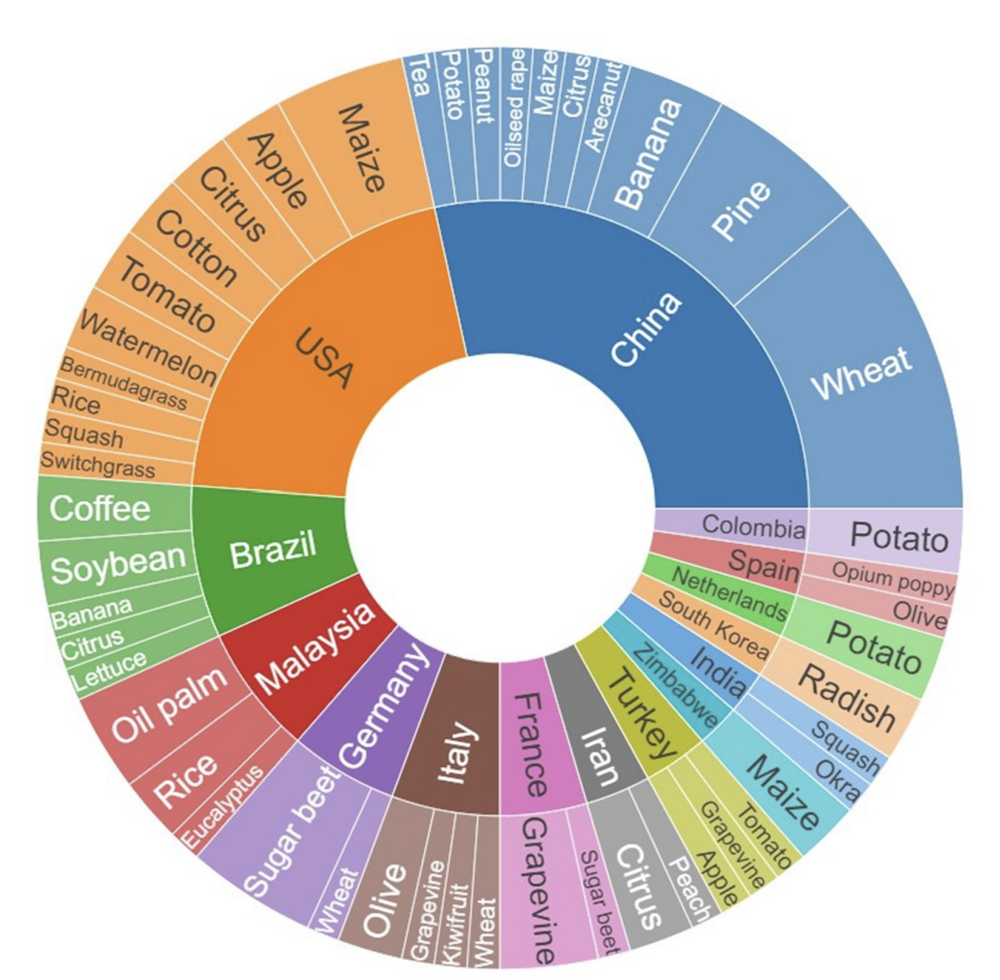
8.4 Disease detection
This section illustrates the use of unmanned aerial vehicle (UAV) remote sensing imagery for identifying banana wilt disease. Fusarium wilt of banana, also known as “banana cancer”, threatens banana production areas worldwide. Timely and accurate identification of Fusarium wilt disease is crucial for effective disease control and optimizing agricultural planting structure (Pegg et al. 2019).
A common initial symptom of this disease is the appearance of a faint pale yellow streak at the base of the petiole of the oldest leaf. This is followed by leaf chlorosis which progresses from lower to upper leaves, wilting of leaves and longitudinal splitting of their bases. Pseudostem splitting of leaf bases is more common in young, rapidly growing plants [Pegg et al. (2019)]Figure 8.10.

Ye et al. (2020) made publicly available experimental data (Huichun YE et al. 2022) on wilted banana plants collected in a banana plantation located in Long’an County, Guangxi (China). The data set includes UAV multispectral reflectance data and ground survey data on the incidence of banana wilt disease. The paper by Ye et al. (2020) reports that the banana Fusarium wilt disease can be easily identified using several vegetation indices (VIs) obtained from this data set. Tested VIs include green chlorophyll index (CIgreen), red-edge chlorophyll index (CIRE), normalized difference vegetation index (NDVI), and normalized difference red-edge index (NDRE). The dataset can be downloaded from here.
8.4.1 Software setup
Let’s start by cleaning up R memory:
Then, we need to install several packages (if they are not installed yet):
list.of.packages <- c("terra",
"tidyterra",
"stars",
"sf",
"leaflet",
"leafem",
"dplyr",
"ggplot2",
"tidymodels")
new.packages <- list.of.packages[!(list.of.packages %in% installed.packages()[,"Package"])]
if(length(new.packages)) install.packages(new.packages)Now, let’s load all the required packages:
library(terra)
library(tidyterra)
library(stars)
library(sf)
library(leaflet)
library(leafem)
library(dplyr)
library(ggplot2)
library(tidymodels)8.4.2 Reading the dataset
Next code supposes you have already downloaded the Huichun YE et al. (2022) dataset and unzipped its content under the data/banana_data directory.
8.4.3 File formats
Let’s list the files under each subfolder:
list.files("data/banana_data/1_UAV multispectral reflectance")[1] "UAV multispectral reflectance.tfw"
[2] "UAV multispectral reflectance.tif.aux.xml"Note that the .tif file contains an orthophotomosaic of surface reflectance. It was created from UAV images taken with a Micasense Red Edge M camera which has five narrow spectral bands: Blue (465–485 nm), green (550–570 nm), red (653–673 nm), red edge (712–722 nm), and near-infrared (800–880 nm). We assume here that those images have been radiometrically and geometrically corrected.
list.files("data/banana_data/2_Ground survey data of banana Fusarium wilt")[1] "Ground_survey_data_of_banana_Fusarium_wilt.dbf"
[2] "Ground_survey_data_of_banana_Fusarium_wilt.prj"
[3] "Ground_survey_data_of_banana_Fusarium_wilt.sbn"
[4] "Ground_survey_data_of_banana_Fusarium_wilt.sbx"
[5] "Ground_survey_data_of_banana_Fusarium_wilt.shp"
[6] "Ground_survey_data_of_banana_Fusarium_wilt.shp.xml"
[7] "Ground_survey_data_of_banana_Fusarium_wilt.shx" This is shapefile with 80 points where the plant health status was collected in same date as the images.
list.files("data/banana_data/3_Boundary of banana planting region")[1] "Boundary_of_banana_planting_region.dbf"
[2] "Boundary_of_banana_planting_region.prj"
[3] "Boundary_of_banana_planting_region.sbn"
[4] "Boundary_of_banana_planting_region.sbx"
[5] "Boundary_of_banana_planting_region.shp"
[6] "Boundary_of_banana_planting_region.shp.xml"
[7] "Boundary_of_banana_planting_region.shx" This is a shapefile with one polygon representing the boundary of the study area.
8.4.4 Read the orthomosaic and the ground data
Now, let’s read the orthomosaic using the terra package:
# Open the tif
tif <- "data/banana_data/1_UAV multispectral reflectance/UAV multispectral reflectance.tif"
rrr <- terra::rast(tif)Let’s check what we get:
rrrNote that this is a 5-band multispectral image with 8 cm pixel size.
Now, let’s read the ground data:
shp <- "data/banana_data/2_Ground survey data of banana Fusarium wilt/Ground_survey_data_of_banana_Fusarium_wilt.shp"
ggg <- sf::st_read(shp)What we got?
gggNote that the attributes are in Chinese language. It seems that we will need to do several changes.
8.4.5 Visualizing the data
As the orthomosaic is too heavy to visualize, we will need a coarser version of it. Let’s use the terra package for doing it.
rrr8 <- terra::aggregate(rrr, 8)
#terra <- resample(elev, template, method='bilinear')Let’s check the output:
rrr8Note that the pixel size of the aggregated raster is 64 cm. Now, in order to visualize the ground points, we will need a color palette:
pal <- colorFactor(
palette = c('green', 'red'),
domain = ggg$样点类型
)Then, we will use the leaflet package to plot the new image and the ground points:
leaflet(data = ggg) |>
addProviderTiles("Esri.WorldImagery") |>
addRasterImage(rrr8) |>
addCircleMarkers(~x_经度, ~y_纬度,
radius = 5,
label = ~样点类型,
fillColor = ~pal(样点类型),
fillOpacity = 1,
stroke = F)8.4.6 Extracting image values at sampled points
Now we will extract raster values at point locations using the st_extract() function from the {stars} library. It is expected that a value per band is extracted at each point.
We need to convert the raster object into a stars object:
sss <- st_as_stars(rrr)What we got?
sssBefore conducting the extraction task, it is advisable to collect band values not at a single pixel but at a small window (e.g. 3x3 pixels). Thus, we will start creating 20cm buffers at each site:
poly <- st_buffer(ggg, dist = 0.20)Now, the extraction task:
# Extract the median value per polygon
buf_values <- aggregate(sss, poly, FUN = median) |>
st_as_sf()What we got:
buf_valuesNote that names of bands are weird:
names(buf_values)Let’s rename band values:
buf_values |> rename(blue = "UAV multispectral reflectance.tif.V1",
red = "UAV multispectral reflectance.tif.V2",
green = "UAV multispectral reflectance.tif.V3",
redge = "UAV multispectral reflectance.tif.V4",
nir = "UAV multispectral reflectance.tif.V5") -> buf_values2Now, we got shorter names per band:
buf_values28.4.7 Computing vegetation indices
Ye et al. (2020) used the following indices Figure 8.11:
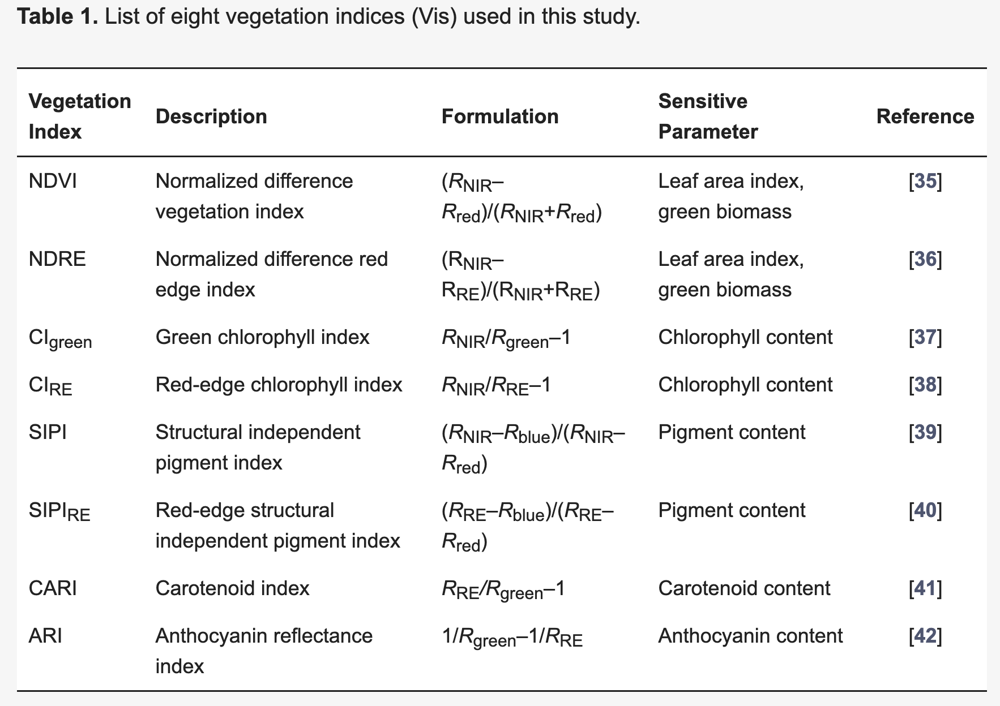
Thus, we will compute several of those indices:
buf_indices <- buf_values2 |>
mutate(ndvi = (nir - red) / (nir+red),
ndre = (nir - redge) / (nir+redge),
cire = (nir) / (redge-1),
sipi = (nir - blue) / (redge-red)
) |> select(ndvi, ndre, cire, sipi)What we got:
buf_indicesNote that the health status is missing in buf_indices. Therefore, we will need to use a spatial join to link such status:
samples <- st_join(
ggg,
buf_indices,
join = st_intersects)Let’s check the output:
samplesIt seems we succeeded.
unique(samples$样点类型)Let’s check it:
samplesNow, we will replace the Chinese words for English words:
samples |>
mutate(score = ifelse(样点类型 == '健康植株', 'healthy', 'wilted')) |>
rename(east = x_经度,
north = y_纬度 ) |>
select(OBJECTID,score, ndvi, ndre, cire, sipi) -> nsamplesLet’s check the output:
nsamplesAs we will not intend to use the geometry in our model, we can remove it:
st_geometry(nsamples) <- NULLLet’s check the output:
nsamplesAs our task is a binary classification (i.e any site can be either healthy or wilted), the variable to estimate is a factor (not a character).
Let’s change the data type of such variable:
nsamples$score = as.factor(nsamples$score) Let’s check the result:
nsamplesA simple summary of the extracted data can be useful:
nsamples |>
group_by(score) |>
summarize(n())This mean the dataset is balanced which is very good.
8.4.8 Saving the extracted dataset
Now, let’s save the nsamples object. Just in case R crashes due to lack of memory.
#uncomment if needed
#st_write(nsamples, "./banana_data/nsamples.csv", overwrite=TRUE)8.4.9 Classification of Fusarium wilt using machine learning (ML)
The overall process to classify the crop disease under study will be conducted using the tidymodels framework which is an extension of the tidyverse suite. It is especially focused towards providing a generalized way to define, run and optimize ML models in R.
8.4.9.1 Exploratory analysis
As a first step in modeling, it’s always a good idea to visualize the data. Let’s start with a boxplot to displays the distribution of a vegetation index. It visualizes five summary statistics (the median, two hinges and two whiskers), and all “outlying” points individually.
p <- ggplot(nsamples, aes(score, ndre))+
r4pde::theme_r4pde()
p + geom_boxplot()Next, we will do a scatterplot to visualize the indices NDRE and CIRE:
ggplot(nsamples) +
aes(x = ndre, y = cire, color = score) +
geom_point(shape = 16, size = 4) +
labs(x = "NDRE", y = "CIRI") +
r4pde::theme_r4pde() +
scale_color_manual(values = c("#71b075", "#ba0600"))8.4.9.2 Splitting the data
Next step is to divide the data into a training and a test set. The set.seed() function can be used for reproducibility of the computations that are dependent on random numbers. By default, the training/testing split is 0.75 to 0.25.
set.seed(42)
data_split <- initial_split(data = nsamples)
data_train <- training(data_split)
data_test <- testing(data_split)Let’s check the result:
data_train8.4.9.3 Defining the model
We will use a logistic regression which is a simple model. It may be useful to have a look at this explanation of such a model.
spec_lr <-
logistic_reg() |>
set_engine("glm") |>
set_mode("classification")8.4.9.4 Defining the recipe
The recipe() function to be used here has two arguments:
A formula. Any variable on the left-hand side of the tilde (~) is considered the model outcome (here, outcome). On the right-hand side of the tilde are the predictors. Variables may be listed by name, or you can use the dot (.) to indicate all other variables as predictors.
The data. A recipe is associated with the data set used to create the model. This will typically be the training set, so
data = data_trainhere.
recipe_lr <-
recipe(score ~ ., data_train) |>
add_role(OBJECTID, new_role = "id") |>
step_zv(all_predictors()) |>
step_corr(all_predictors())8.4.9.5 Evaluating model performance
Next, we need to specify what we would like to see for determining the performance of the model. Different modelling algorithms have different types of metrics. Because we have a binary classification problem (healthy vs. wilted classification), we will chose the AUC - ROC evaluation metric here.
8.4.9.6 Combining model and recipe into a workflow
We will want to use our recipe across several steps as we train and test our model. We will:
Process the recipe using the training set: This involves any estimation or calculations based on the training set. For our recipe, the training set will be used to determine which predictors should be converted to dummy variables and which predictors will have zero-variance in the training set, and should be slated for removal.
Apply the recipe to the training set: We create the final predictor set on the training set.
Apply the recipe to the test set: We create the final predictor set on the test set. Nothing is recomputed and no information from the test set is used here; the dummy variable and zero-variance results from the training set are applied to the test set.
To simplify this process, we can use a model workflow, which pairs a model and recipe together. This is a straightforward approach because different recipes are often needed for different models, so when a model and recipe are bundled, it becomes easier to train and test workflows. We’ll use the workflows package from tidymodels to bundle our model with our recipe.
Now we are ready to setup our complete modelling workflow. This workflow contains the model specification and the recipe.
wf_bana_wilt <-
workflow(
spec = spec_lr,
recipe_lr
)
wf_bana_wilt8.4.9.7 Fitting the logistic regression model
Now we use the workflow previously created to fit the model on our training data. We use the training partition of the data.
fit_lr <- wf_bana_wilt |>
fit(data = data_train)Let’s check the output:
fit_lrNow, we will use the fitted model to estimate health status in the training data:
rf_training_pred <-
predict(fit_lr, data_train) |>
bind_cols(predict(fit_lr, data_train, type = "prob")) |>
# Add the true outcome data back in
bind_cols(data_train |>
select(score))What we got?
rf_training_predLet’s estimate the training accuracy:
rf_training_pred |> # training set predictions
accuracy(truth = score, .pred_class) -> acc_train
acc_trainThe accuracy of the model on the training data is 0.85 which is above 0.5 (mere chance). This basically means that the model was able to learn predictive patterns from the training data. To see if the model is able to generalize what it learned when exposed to new data, we evaluate the model on our hold-out (or so-called test data). We created a test dataset when splitting the data at the start of the modelling.
8.4.9.8 Evaluating the model on test data
Now, we will use the fitted model to estimate health status in the testing data:
lr_testing_pred <-
predict(fit_lr, data_test) |>
bind_cols(predict(fit_lr, data_test, type = "prob")) |>
bind_cols(data_test |> select(score))What we got:
lr_testing_predLet’s compute the testing accuracy:
lr_testing_pred |> # test set predictions
accuracy(score, .pred_class)The resulting accuracy is similar to the accuracy on the training data. It is good for a first go and a relatively simple classification model.
## Let's plot the AUC-ROC
lr_testing_pred |>
roc_curve(truth = score, .pred_wilted, event_level="second") |>
mutate(model = "Logistic Regression") |>
autoplot()8.4.10 Conclusions
In this section, we trained and tested a logistic regression model (LGM) using four spectral indices as predictor variables (i.e. NDVI, NDRE, CIRE and SIPI). Compare this section results, in terms of equation and accuracy, with the individual LGMs tested by [Ye et al. (2020)]Figure 8.12.
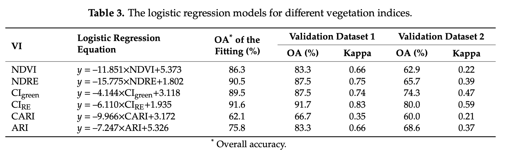
Note that we have not tested other ML algorithms. But there are a lot of them available from the tidymodels framework (e.g. random forests, support vector machines, gradient boosting machines).
To conclude, this section illustrated how to use VIs derived from UAV-based multispectral imagery and ground data to develop an identification model for detecting banana Fusarium wilt. The results showed that a simple logistic regression model is able to identify Fusarium wilt of banana from several VIs with a good accuracy. However, before going too optimistic, I would suggest to study the Ye et al. (2020) paper and critically evaluate their experiment design, methods and results.
8.5 Disease quantification
8.5.1 Introduction
This section illustrates the use of UAV multispecral imagery for estimating the severity of cercospora leaf spot (CLS) disease in table beet, the most destructive fungal disease of table beet (Skaracis et al. 2010; Tan et al. 2023). The CLS disease causes rapid defoliation and significant crop loss may occur through the inability to harvest with top-pulling machinery. It may also render the produce unsaleable for the fresh market (Skaracis et al. 2010).
Saif et al. (2024) recently published on Mendeley data UAV imagery & ground truth CLS data collected a several table beef plots at Cornell AgriTech, Geneva, New York, USA. Note that, in this study, UAV multispectral images were collected using a Micasense Red Edge camera, similar to the one used in the case study for the detection of Fusarium wilt on banana. I have not found any scientific paper estimating CLS severity from this dataset. However, in Saif et al. (2023), a similar dataset was used to forecast table beet root yield at Cornell Agritech. While it is just a guess, it is worth visualizing the plots in the latter study.

This section aims at estimating CLS leaf severity using vegetation indices (VIs) derived from the multispectral UAV imagery as spectral covariates. The section comprises two parts: (i) Part 1 creates a spectral covariate table to summarize the complete UAV imagery & ground truth data; and (ii) Part 2 trains and tests a machine learning model to estimate CLS severity.
8.5.2 CLS severity on leaves
It is very important to visualize how different levels of table beet CLS disease severity look in RGB color leaf images. The figure below is a standard area diagram set (SADs) that is used by raters during the assessment of visual severity to increase their accuracy and reliability of the estimates.
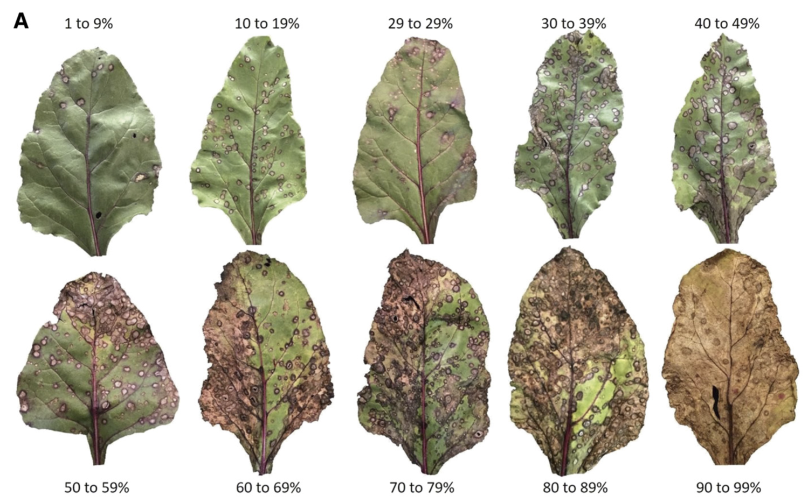
8.5.3 Software setup
Let’s start by cleaning up R memory:
# Re-enable execution for the Cercospora leaf spot section
knitr::opts_chunk$set(eval = TRUE)
rm(list=ls())Then, we need to install several packages (if they are not installed yet):
list.of.packages <- c("readr","terra", "tidyterra", "stars", "sf", "leaflet", "leafem", "dplyr", "ggplot2", "tidymodels")
new.packages <- list.of.packages[!(list.of.packages %in% installed.packages()[,"Package"])]
if(length(new.packages)) install.packages(new.packages)Now, let’s load all the required packages:
library(readr)
library(terra)
library(tidyterra)
library(stars)
library(sf)
library(leaflet)
library(leafem)
library(dplyr)
library(ggplot2)
library(tidymodels)8.5.4 Read the dataset
The following code assumes you have already downloaded the dataset and unzipped its content under the data/cercospora_data directory. What files are in that folder?
list.files("data/cercospora_data") [1] "CLS_DS.csv" "D0_2021.csv" "D1_2021.csv"
[4] "D2_2021.csv" "D3_2021.csv" "D4_2021.csv"
[7] "fcovar_2021.csv" "multispec_2021_2022" "multispec_2023"
[10] "ncovar_2021.csv" "README.md" Note that there is one CLS_DS.csv file with the CLS ground data and two folders with the UAV multispectral images. We can infer that 2021, 2022, 2023 refer to the image acquisition years. At this point, it is very important to check the README file. I will summarize the following points:
8.5.4.1 File naming convention
Each image file is named according to the plot number and the date of capture, using the format plt_rYYYYMMDD, where:
- ‘plt’ stands for the plot number.
- ‘YYYYMMDD’ represents the date on which the image was captured (year, month, day).
For example, the file name 5_r20210715 corresponds to an image taken on July 15, 2021, from study plot 5.
8.5.4.2 CLS Severity Data
File named CLS_DS contain visual assessments of CLS disease severity noted for each plot.
8.5.5 Inspect the format of each file
Let’s list the first images under an image folder:
list.files("data/cercospora_data/multispec_2021_2022/")[1:15] [1] "1_r20210707.tif" "1_r20210707.tif.aux.xml"
[3] "1_r20210715.tif" "1_r20210720.tif"
[5] "1_r20210802.tif" "1_r20210825.tif"
[7] "1_r20210825.tif.aux.xml" "1_r20220707.tif"
[9] "1_r20220715.tif" "1_r20220726.tif"
[11] "1_r20220810.tif" "1_r20220818.tif"
[13] "10_r20210707.tif" "10_r20210715.tif"
[15] "10_r20210720.tif" Note that, for 2021, there are six dates of image acquisition: 20210707, 20210715, 20210720,20210726, 20210802,20210825
8.5.6 Read the orthomosaics
Now, let’s read several plot images using the terra package:
# Open a tif collected on study plot 5 on 7th July 2021
tif1 <- "data/cercospora_data/multispec_2021_2022/1_r20210707.tif"
tif2 <- "data/cercospora_data/multispec_2021_2022/2_r20210707.tif"
tif3 <- "data/cercospora_data/multispec_2021_2022/3_r20210707.tif"
tif4 <- "data/cercospora_data/multispec_2021_2022/4_r20210707.tif"
tif5 <- "data/cercospora_data/multispec_2021_2022/5_r20210707.tif"
tif6 <- "data/cercospora_data/multispec_2021_2022/6_r20210707.tif"
tif7 <- "data/cercospora_data/multispec_2021_2022/7_r20210707.tif"
tif8 <- "data/cercospora_data/multispec_2021_2022/8_r20210707.tif"
tif9 <- "data/cercospora_data/multispec_2021_2022/9_r20210707.tif"
tif10 <- "data/cercospora_data/multispec_2021_2022/10_r20210707.tif"It may be convenient to increase image pixel size (to make the raster lighter):
p01 <- terra::rast(tif1) %>% aggregate(20)
p02 <- terra::rast(tif2) %>% aggregate(20)
p03 <- terra::rast(tif3) %>% aggregate(20)
p04 <- terra::rast(tif4) %>% aggregate(20)
p05 <- terra::rast(tif5) %>% aggregate(20)
p06 <- terra::rast(tif6) %>% aggregate(20)
p07 <- terra::rast(tif7) %>% aggregate(20)
p08 <- terra::rast(tif8) %>% aggregate(20)
p09 <- terra::rast(tif9) %>% aggregate(20)
p10 <- terra::rast(tif10) %>% aggregate(20)Let’s check what we get:
p01class : SpatRaster
size : 15, 9, 5 (nrow, ncol, nlyr)
resolution : 0.212, 0.212 (x, y)
extent : 334196.9, 334198.8, 4748990, 4748993 (xmin, xmax, ymin, ymax)
coord. ref. : WGS 84 / UTM zone 18N (EPSG:32618)
source(s) : memory
names : 1_r20210707_1, 1_r20210707_2, 1_r20210707_3, 1_r20210707_4, 1_r20210707_5
min values : 0.01288329, 0.02743819, 0.01721323, 0.06647335, 0.1167282
max values : 0.03016389, 0.06923942, 0.07651012, 0.18791453, 0.4155874 Note that each image has 5 bands with ~21 cm pixel size.
As the images have been split in plots, it may be useful to “mosaic” them.
# with many SpatRasters, make a SpatRasterCollection from a list
rlist <- list(p01, p02, p03, p04, p05, p06, p07, p08, p09, p10)
rsrc <- sprc(rlist)
m <- merge(rsrc)Warning: [merge] 10 raster(s) that did not share the base geometry of the first
raster were resampledWhat we got?
mclass : SpatRaster
size : 209, 24, 5 (nrow, ncol, nlyr)
resolution : 0.212, 0.212 (x, y)
extent : 334193.8, 334198.9, 4748990, 4749035 (xmin, xmax, ymin, ymax)
coord. ref. : WGS 84 / UTM zone 18N (EPSG:32618)
source(s) : memory
names : 1_r20210707_1, 1_r20210707_2, 1_r20210707_3, 1_r20210707_4, 1_r20210707_5
min values : 0.01390121, 0.02954650, 0.01960831, 0.0706145, 0.1283448
max values : 0.03741143, 0.08793678, 0.08386827, 0.2208381, 0.5030925 Let’s know band names:
names(m)[1] "1_r20210707_1" "1_r20210707_2" "1_r20210707_3" "1_r20210707_4"
[5] "1_r20210707_5"We will rename band names:
# Rename
m2 <- m %>%
rename(blue = "1_r20210707_1", green = "1_r20210707_2",
red = "1_r20210707_3", redge= "1_r20210707_4",
nir = "1_r20210707_5")Let’s get a summary of the mosaic:
summary(m2) blue green red redge
Min. :0.014 Min. :0.030 Min. :0.020 Min. :0.071
1st Qu.:0.019 1st Qu.:0.052 1st Qu.:0.029 1st Qu.:0.113
Median :0.022 Median :0.058 Median :0.041 Median :0.138
Mean :0.023 Mean :0.058 Mean :0.043 Mean :0.139
3rd Qu.:0.026 3rd Qu.:0.064 3rd Qu.:0.056 3rd Qu.:0.164
Max. :0.037 Max. :0.088 Max. :0.084 Max. :0.221
NA's :3896 NA's :3896 NA's :3896 NA's :3896
nir
Min. :0.128
1st Qu.:0.216
Median :0.291
Mean :0.298
3rd Qu.:0.377
Max. :0.503
NA's :3896 hist(m2)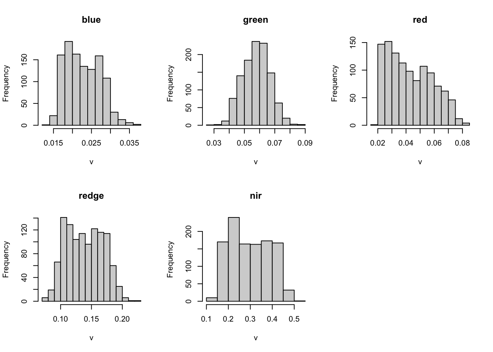
Let’s visualize the mosaic:
ggplot() +
geom_spatraster(data = m2) +
facet_wrap(~lyr, ncol = 5) +
r4pde::theme_r4pde(font_size = 10)+
scale_fill_whitebox_c(
palette = "muted",
labels = scales::label_number(suffix = "%"),
n.breaks = 10,
guide = guide_legend(reverse = TRUE)
) +
labs(
fill = "",
title = "UAV multispectral mosaic",
subtitle = "07.07.2021"
)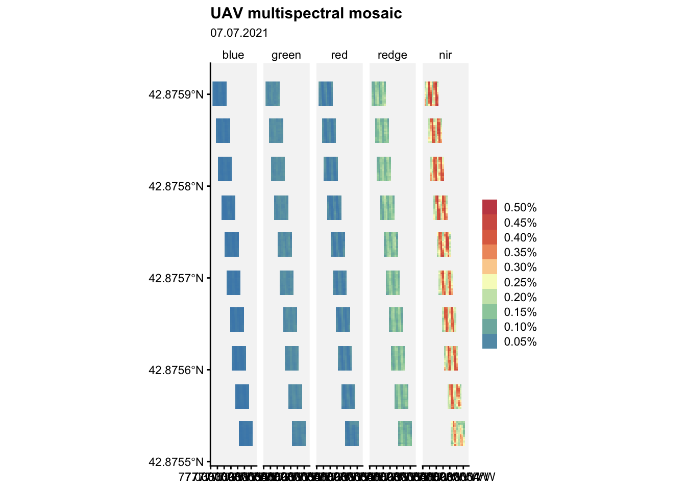
Let’s read all images collected at a later date:
# Open all images collected on 25th August 2021
tif1 <- "data/cercospora_data/multispec_2021_2022/1_r20210825.tif"
tif2 <- "data/cercospora_data/multispec_2021_2022/2_r20210825.tif"
tif3 <- "data/cercospora_data/multispec_2021_2022/3_r20210825.tif"
tif4 <- "data/cercospora_data/multispec_2021_2022/4_r20210825.tif"
tif5 <- "data/cercospora_data/multispec_2021_2022/5_r20210825.tif"
tif6 <- "data/cercospora_data/multispec_2021_2022/6_r20210825.tif"
tif7 <- "data/cercospora_data/multispec_2021_2022/7_r20210825.tif"
tif8 <- "data/cercospora_data/multispec_2021_2022/8_r20210825.tif"
tif9 <- "data/cercospora_data/multispec_2021_2022/9_r20210825.tif"
tif10 <- "data/cercospora_data/multispec_2021_2022/10_r20210825.tif"p01 <- terra::rast(tif1) %>% aggregate(20)
p02 <- terra::rast(tif2) %>% aggregate(20)
p03 <- terra::rast(tif3) %>% aggregate(20)
p04 <- terra::rast(tif4) %>% aggregate(20)
p05 <- terra::rast(tif5) %>% aggregate(20)
p06 <- terra::rast(tif6) %>% aggregate(20)
p07 <- terra::rast(tif7) %>% aggregate(20)
p08 <- terra::rast(tif8) %>% aggregate(20)
p09 <- terra::rast(tif9) %>% aggregate(20)
p10 <- terra::rast(tif10) %>% aggregate(20)# with many SpatRasters, make a SpatRasterCollection from a list
rlist <- list(p01, p02, p03, p04, p05, p06, p07, p08, p09, p10)
rsrc <- sprc(rlist)
mm <- merge(rsrc)Warning: [merge] 9 raster(s) that did not share the base geometry of the first
raster were resamplednames(mm)[1] "1_r20210825_1" "1_r20210825_2" "1_r20210825_3" "1_r20210825_4"
[5] "1_r20210825_5"# Rename
mm2 <- mm %>%
rename(blue = "1_r20210825_1", green = "1_r20210825_2",
red = "1_r20210825_3", redge= "1_r20210825_4",
nir = "1_r20210825_5")Now, a visualization task:
ggplot() +
geom_spatraster(data = mm2) +
facet_wrap(~lyr, ncol = 5) +
r4pde::theme_r4pde(font_size = 10)+
scale_fill_whitebox_c(
palette = "muted",
labels = scales::label_number(suffix = "%"),
n.breaks = 10,
guide = guide_legend(reverse = TRUE)
) +
labs(
fill = "",
title = "UAV multispectral mosaic",
subtitle = "08.25.2021"
)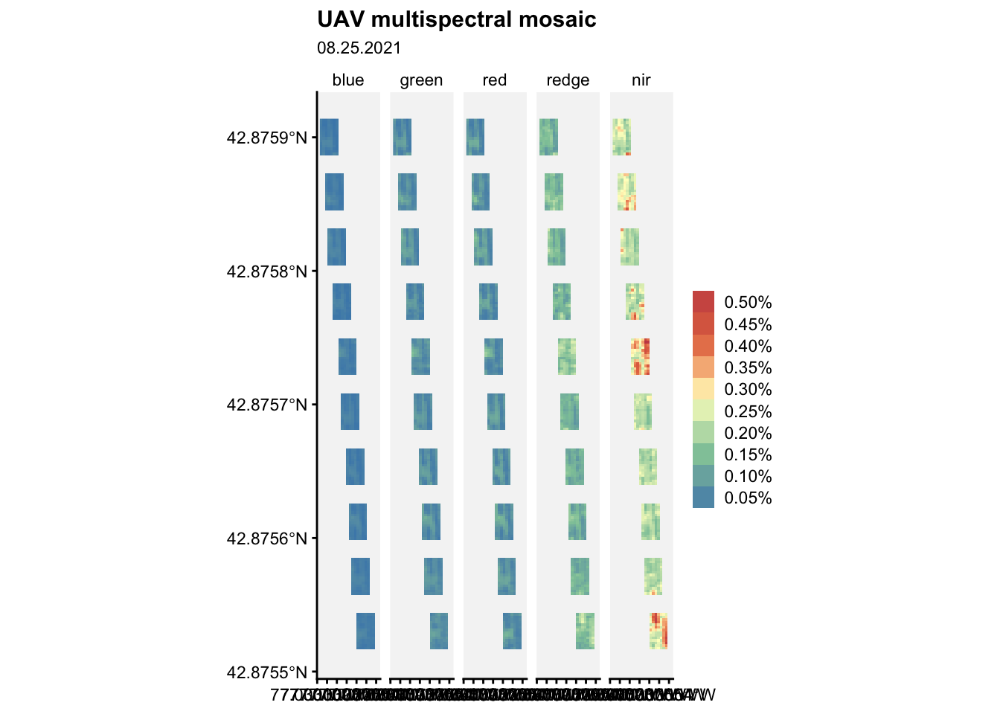
8.5.7 Reading severity data
Now, let’s read the ground CLS data:
file <- "data/cercospora_data/CLS_DS.csv"
cls <- readr::read_csv(file, col_names = TRUE, show_col_types = FALSE)What we got?
cls# A tibble: 136 × 9
Plot D0 D1 D2 D3 D4 D5 D6 year
<dbl> <dbl> <dbl> <dbl> <dbl> <dbl> <dbl> <dbl> <dbl>
1 1 0 0.25 0.9 4.58 8.75 21 NA 2021
2 2 0 0.75 3.68 12.4 20.8 45.4 NA 2021
3 3 0 2.92 7.38 18 34.6 65.2 NA 2021
4 4 0 0.75 5.45 17.4 42.6 75.5 NA 2021
5 5 0 3.38 3.45 15.4 17.2 55.2 NA 2021
6 6 0 0.8 1.38 8.8 12.2 15.4 NA 2021
7 7 0 0.375 3.05 9.1 13 31.0 NA 2021
8 8 0 3.7 8.4 29.4 41.2 71.8 NA 2021
9 9 0 2.38 4.28 13.2 15.6 38.1 NA 2021
10 10 0 2.22 2.28 30.2 17.3 68 NA 2021
# ℹ 126 more rowsNote that columns D0 to D6 refer to the disease severity recorded in percentage at different dates for each study plot. Note also that this object is structured in wide format (i.e. each row represents a single plot for each year).
unique(cls$Plot) [1] 1 2 3 4 5 6 7 8 9 10 11 12 13 14 15 16 17 18 19 20 21 22 23 24 25
[26] 26 27 28 29 30 31 32 33 34 35 36 37 38 39 40 41 42 43 44 45 46 47 48 49 50
[51] 51 52 53 54 55 56Let’s know the values stored in the year attribute:
unique(cls$year)[1] 2021 2022 20238.5.8 Preparing a set of spectral covariables per plot & date
The 2021 data collection dates are 20210707, 20210715, 20210720, 20210802,and 20210825.
Let’s start creating a list of images per date for 2021:
# Create a list .tif files collected at each date:
# These are the DXfiles
D0files <- Sys.glob("data/cercospora_data/multispec_2021_2022/*_r20210707.tif")
D1files <- Sys.glob("data/cercospora_data/multispec_2021_2022/*_r20210715.tif")
D2files <- Sys.glob("data/cercospora_data/multispec_2021_2022/*_r20210720.tif")
D3files <- Sys.glob("data/cercospora_data/multispec_2021_2022/*_r20210802.tif")
D4files <- Sys.glob("data/cercospora_data/multispec_2021_2022/*_r20210825.tif")Now, define date variables:
# These are the DX variables
(D0 <- as.Date('7/7/2021',format='%m/%d/%Y'))[1] "2021-07-07"(D1 <- as.Date('7/15/2021',format='%m/%d/%Y'))[1] "2021-07-15"(D2 <- as.Date('7/20/2021',format='%m/%d/%Y'))[1] "2021-07-20"(D3 <- as.Date('8/02/2021',format='%m/%d/%Y'))[1] "2021-08-02"(D4 <- as.Date('8/25/2021',format='%m/%d/%Y'))[1] "2021-08-25"The following block of code should be executed five times (one per each DXfiles & each DX variable).
The code reads each image included in a given DXfiles, computes several vegetation indices (VIs) for such image, and obtain the average value of original bands & VIs per each. All values are stored in a vector object.
# Read all files for each date
lista <- lapply(D0files, function(x) rast(x))
# Compute global statistics
output <- vector("double", 5) # 1. output
for (i in seq_along(lista)) { # 2. sequence
img <- lista[[i]]
r <- clamp(img, 0, 1)
ndvi <- (r[[5]]-r[[3]])/(r[[5]]+r[[3]])
ndre = (r[[5]]-r[[4]]) / (r[[5]]+r[[4]])
cire = (r[[5]]) / (r[[4]]-1)
sipi = (r[[5]] - r[[1]]) / (r[[4]]-r[[3]])
min <- minmax(ndvi)[1]
max <- minmax(ndvi)[2]
avg <- global(ndvi, fun="mean", na.rm=TRUE)[,1]
#dev <- global(ndvi, fun="std")
#mndvi <- (ndvi-min)/(max-min)
mndvi <- 2 + log((ndvi-avg)/(max-min))
nimg <- c(r,ndvi, ndre, cire, sipi, mndvi)
output[i] <- global(nimg, fun="mean", na.rm=TRUE)
#output[i] <- global(nimg, mean, na.rm=TRUE)
}The following block of code combine all vectors produced previously into a matrix as a previous step to put all data into a dataframe with meaningful colummn names. It also add colummns storing each plot ID as well as the corresponding data. Note the the code also needs to be executed five times (one per each DX variable).
#combine all vectors into a matrix
mat <- do.call("rbind",output) #combine all vectors into a matrix
#convert matrix to data frame
df <- as.data.frame(mat)
#specify column names
colnames(df) <- c('blue', 'green', 'red', 'redge', 'nir', 'ndvi',
'ndre', 'cire', 'sipi', 'mndvi')
date = D0
plot <- seq(1:40)
date <- rep(date,40)
newdf <- cbind(df,plot,date)What we got?
newdf blue green red redge nir ndvi ndre
1 0.02343657 0.05959132 0.04362133 0.1444027 0.3131252 0.6988392 0.3515343
2 0.02282100 0.05970168 0.04427105 0.1432050 0.3003496 0.6909051 0.3404127
3 0.02229088 0.06034372 0.04296553 0.1441267 0.3037592 0.6985894 0.3424855
4 0.02211413 0.06289556 0.04265936 0.1493579 0.3175088 0.7124582 0.3477512
5 0.02311490 0.05985614 0.04618947 0.1392655 0.2849417 0.6763379 0.3314924
6 0.02237584 0.06117992 0.04150024 0.1462904 0.3117826 0.7198424 0.3504247
7 0.02086133 0.05870957 0.03996187 0.1412853 0.3017970 0.7235433 0.3521370
8 0.02132975 0.05750314 0.03989218 0.1370614 0.2956135 0.7157179 0.3550798
9 0.02188219 0.05869401 0.04093412 0.1413798 0.3023368 0.7115535 0.3503842
10 0.02260319 0.05975366 0.04357307 0.1429067 0.2992025 0.6962978 0.3402171
11 0.02089238 0.04880216 0.04060995 0.1215226 0.2446871 0.6569093 0.3221139
12 0.02350888 0.05890453 0.04759297 0.1368886 0.2807072 0.6557864 0.3276572
13 0.02218707 0.05638867 0.04349103 0.1341888 0.2819767 0.6780262 0.3441717
14 0.02275558 0.05684062 0.04544145 0.1339135 0.2753768 0.6666547 0.3337416
15 0.02272742 0.05738843 0.04389310 0.1379283 0.2873050 0.6838893 0.3418451
16 0.02140498 0.05666796 0.04005207 0.1370657 0.2937609 0.7116084 0.3544429
17 0.02086186 0.05736772 0.03807191 0.1398500 0.2991122 0.7290118 0.3560801
18 0.02015755 0.05423116 0.03848824 0.1311203 0.2787107 0.7109047 0.3537186
19 0.02193068 0.05637152 0.03996171 0.1306193 0.2834647 0.7008749 0.3578544
20 0.02214865 0.05725453 0.04177672 0.1331511 0.2830351 0.6914292 0.3488766
21 0.02122350 0.05473366 0.04193676 0.1295753 0.2737450 0.6830712 0.3463346
22 0.02200368 0.05443210 0.04510647 0.1327359 0.2787727 0.6671694 0.3387558
23 0.02334062 0.05691194 0.04427723 0.1309551 0.2608062 0.6588717 0.3212313
24 0.02211155 0.06021804 0.03976967 0.1403651 0.3081556 0.7156574 0.3615820
25 0.02174683 0.05562259 0.03816646 0.1312835 0.2858236 0.7057869 0.3560048
26 0.02082576 0.05881460 0.03393639 0.1407333 0.3136037 0.7548543 0.3704691
27 0.02192849 0.06039847 0.03532052 0.1438516 0.3201219 0.7514753 0.3694975
28 0.02302246 0.06453867 0.03590782 0.1454413 0.3360538 0.7627826 0.3862154
29 0.02060561 0.05634195 0.03435760 0.1348848 0.3139023 0.7577029 0.3915793
30 0.02453648 0.05776692 0.04101824 0.1400822 0.3165895 0.7123657 0.3729309
31 0.02449699 0.06516875 0.04320010 0.1488943 0.3369249 0.7188490 0.3734588
32 0.02375349 0.06403329 0.04276755 0.1462964 0.3370367 0.7210620 0.3804087
33 0.02255618 0.05711345 0.04411843 0.1383896 0.2971490 0.6880898 0.3481446
34 0.02217878 0.05772793 0.04388026 0.1337953 0.2885867 0.6798194 0.3490214
35 0.02187461 0.05617408 0.04287472 0.1365350 0.2917336 0.6953013 0.3481033
36 0.02296074 0.05817811 0.04563811 0.1391187 0.2921268 0.6801861 0.3393280
37 0.02267559 0.05957335 0.04213828 0.1420391 0.3082079 0.7142905 0.3568940
38 0.02360669 0.05999425 0.04294853 0.1433218 0.3103642 0.7052194 0.3528355
39 0.02364231 0.06191251 0.04298429 0.1483199 0.3220375 0.7163665 0.3560244
40 0.02427710 0.06139374 0.04394927 0.1444968 0.3085851 0.6985304 0.3476681
cire sipi mndvi plot date
1 -0.3789603 3.641733 0.33578281 1 2021-07-07
2 -0.3623515 3.550125 0.38310911 2 2021-07-07
3 -0.3674174 3.484420 0.30046194 3 2021-07-07
4 -0.3865963 3.431203 0.36371401 4 2021-07-07
5 -0.3408283 3.558089 0.44423685 5 2021-07-07
6 -0.3768460 3.376905 0.24863497 6 2021-07-07
7 -0.3618540 3.407052 0.30100962 7 2021-07-07
8 -0.3531518 3.494425 0.34119340 8 2021-07-07
9 -0.3637379 3.481473 0.32563500 9 2021-07-07
10 -0.3605456 3.516463 0.39810832 10 2021-07-07
11 -0.2870937 3.673143 0.49929140 11 2021-07-07
12 -0.3354612 3.761214 0.58121969 12 2021-07-07
13 -0.3377332 3.773541 0.52614654 13 2021-07-07
14 -0.3282154 3.695583 0.50885882 14 2021-07-07
15 -0.3454207 3.635421 0.39704537 15 2021-07-07
16 -0.3519775 3.536311 0.40365150 16 2021-07-07
17 -0.3597412 3.381570 0.19228050 17 2021-07-07
18 -0.3315227 3.570230 0.37412852 18 2021-07-07
19 -0.3374564 3.779183 0.21921958 19 2021-07-07
20 -0.3374060 3.622386 0.26701154 20 2021-07-07
21 -0.3250037 3.703904 0.39212223 21 2021-07-07
22 -0.3321942 3.766054 0.43835034 22 2021-07-07
23 -0.3098876 3.691888 0.32447853 23 2021-07-07
24 -0.3720515 3.512840 0.37734386 24 2021-07-07
25 -0.3404875 3.509041 0.35422784 25 2021-07-07
26 -0.3779853 3.204817 0.14699663 26 2021-07-07
27 -0.3867478 3.270867 0.08401903 27 2021-07-07
28 -0.4060356 3.304020 0.01329941 28 2021-07-07
29 -0.3747234 3.590456 0.09783340 29 2021-07-07
30 -0.3813865 4.120632 0.31838109 30 2021-07-07
31 -0.4099608 3.819633 0.35157164 31 2021-07-07
32 -0.4091370 3.878319 0.33094172 32 2021-07-07
33 -0.3558508 3.668159 0.40724176 33 2021-07-07
34 -0.3443164 4.378597 0.44631347 34 2021-07-07
35 -0.3486557 3.563385 0.37868256 35 2021-07-07
36 -0.3494958 3.645456 0.44505296 36 2021-07-07
37 -0.3711740 3.527677 0.30651449 37 2021-07-07
38 -0.3742929 3.591207 0.22357258 38 2021-07-07
39 -0.3906997 3.483071 0.21173498 39 2021-07-07
40 -0.3740427 3.568325 0.26238290 40 2021-07-07The following block of code writes to disk a DX_2021.csv file. Note that the append parameter is set to FALSE in order to overwrite any existing data.
write_csv(
newdf,
"data/cercospora_data/D0_2021.csv",
na = "NA",
col_names = TRUE,
append = FALSE
)8.5.9 Put all covariate data in a single object
Now, we will read all the recently created csv files and put all covariate data values into a single object.
Next code obtains a list with the path of every csv file matching the D*_2021.csv expression:
(csv_files <- Sys.glob("data/cercospora_data/D*_2021.csv"))[1] "data/cercospora_data/D0_2021.csv" "data/cercospora_data/D1_2021.csv"
[3] "data/cercospora_data/D2_2021.csv" "data/cercospora_data/D3_2021.csv"
[5] "data/cercospora_data/D4_2021.csv"Now, we will read all files in the list:
(df.2021 <- do.call(rbind,lapply(csv_files,read.csv))) blue green red redge nir ndvi ndre
1 0.02343657 0.05959132 0.04362133 0.1444027 0.3131252 0.6988392 0.3515343
2 0.02282100 0.05970168 0.04427105 0.1432050 0.3003496 0.6909051 0.3404127
3 0.02229088 0.06034372 0.04296553 0.1441267 0.3037592 0.6985894 0.3424855
4 0.02211413 0.06289556 0.04265936 0.1493579 0.3175088 0.7124582 0.3477512
5 0.02311490 0.05985614 0.04618947 0.1392655 0.2849417 0.6763379 0.3314924
6 0.02237584 0.06117992 0.04150024 0.1462904 0.3117826 0.7198424 0.3504247
7 0.02086133 0.05870957 0.03996187 0.1412853 0.3017970 0.7235433 0.3521370
8 0.02132975 0.05750314 0.03989218 0.1370614 0.2956135 0.7157179 0.3550798
9 0.02188219 0.05869401 0.04093412 0.1413798 0.3023368 0.7115535 0.3503842
10 0.02260319 0.05975366 0.04357307 0.1429067 0.2992025 0.6962978 0.3402171
11 0.02089238 0.04880216 0.04060995 0.1215226 0.2446871 0.6569093 0.3221139
12 0.02350888 0.05890453 0.04759297 0.1368886 0.2807072 0.6557864 0.3276572
13 0.02218707 0.05638867 0.04349103 0.1341888 0.2819767 0.6780262 0.3441717
14 0.02275558 0.05684062 0.04544145 0.1339135 0.2753768 0.6666547 0.3337416
15 0.02272742 0.05738843 0.04389310 0.1379283 0.2873050 0.6838893 0.3418451
16 0.02140498 0.05666796 0.04005207 0.1370657 0.2937609 0.7116084 0.3544429
17 0.02086186 0.05736772 0.03807191 0.1398500 0.2991122 0.7290118 0.3560801
18 0.02015755 0.05423116 0.03848824 0.1311203 0.2787107 0.7109047 0.3537186
19 0.02193068 0.05637152 0.03996171 0.1306193 0.2834647 0.7008749 0.3578544
20 0.02214865 0.05725453 0.04177672 0.1331511 0.2830351 0.6914292 0.3488766
21 0.02122350 0.05473366 0.04193676 0.1295753 0.2737450 0.6830712 0.3463346
22 0.02200368 0.05443210 0.04510647 0.1327359 0.2787727 0.6671694 0.3387558
23 0.02334062 0.05691194 0.04427723 0.1309551 0.2608062 0.6588717 0.3212313
24 0.02211155 0.06021804 0.03976967 0.1403651 0.3081556 0.7156574 0.3615820
25 0.02174683 0.05562259 0.03816646 0.1312835 0.2858236 0.7057869 0.3560048
26 0.02082576 0.05881460 0.03393639 0.1407333 0.3136037 0.7548543 0.3704691
27 0.02192849 0.06039847 0.03532052 0.1438516 0.3201219 0.7514753 0.3694975
28 0.02302246 0.06453867 0.03590782 0.1454413 0.3360538 0.7627826 0.3862154
29 0.02060561 0.05634195 0.03435760 0.1348848 0.3139023 0.7577029 0.3915793
30 0.02453648 0.05776692 0.04101824 0.1400822 0.3165895 0.7123657 0.3729309
31 0.02449699 0.06516875 0.04320010 0.1488943 0.3369249 0.7188490 0.3734588
32 0.02375349 0.06403329 0.04276755 0.1462964 0.3370367 0.7210620 0.3804087
33 0.02255618 0.05711345 0.04411843 0.1383896 0.2971490 0.6880898 0.3481446
34 0.02217878 0.05772793 0.04388026 0.1337953 0.2885867 0.6798194 0.3490214
35 0.02187461 0.05617408 0.04287472 0.1365350 0.2917336 0.6953013 0.3481033
36 0.02296074 0.05817811 0.04563811 0.1391187 0.2921268 0.6801861 0.3393280
37 0.02267559 0.05957335 0.04213828 0.1420391 0.3082079 0.7142905 0.3568940
38 0.02360669 0.05999425 0.04294853 0.1433218 0.3103642 0.7052194 0.3528355
39 0.02364231 0.06191251 0.04298429 0.1483199 0.3220375 0.7163665 0.3560244
40 0.02427710 0.06139374 0.04394927 0.1444968 0.3085851 0.6985304 0.3476681
41 0.02052956 0.05020432 0.02973388 0.1338569 0.3185785 0.7882094 0.3981185
42 0.01859800 0.05052206 0.03105854 0.1318898 0.3058317 0.7805916 0.3922774
43 0.01981702 0.05348824 0.03288278 0.1322381 0.3022270 0.7638127 0.3819167
44 0.02000617 0.05614472 0.03134368 0.1402745 0.3260600 0.7887921 0.3904000
45 0.02095564 0.05658479 0.03321928 0.1439913 0.3291102 0.7828250 0.3835718
46 0.02237261 0.05968790 0.03353345 0.1488491 0.3470870 0.7903656 0.3917955
47 0.02100918 0.05998822 0.03180204 0.1560300 0.3643333 0.8096700 0.3941080
48 0.02181143 0.05995075 0.03243477 0.1516184 0.3587694 0.8000431 0.3988671
49 0.02132649 0.05706844 0.03089749 0.1471923 0.3448123 0.8004532 0.3926974
50 0.02159894 0.05753348 0.03114798 0.1416646 0.3302551 0.7919107 0.3914513
51 0.02038298 0.04942617 0.03205623 0.1217379 0.2899206 0.7603175 0.3967210
52 0.02266377 0.05830423 0.03712530 0.1481954 0.3369567 0.7581285 0.3783657
53 0.02015731 0.04875384 0.03535302 0.1201503 0.2717107 0.7356596 0.3799353
54 0.02165452 0.05001698 0.03766276 0.1215014 0.2670488 0.7155948 0.3650533
55 0.02265802 0.05245606 0.03529764 0.1328123 0.3006981 0.7540973 0.3802748
56 0.02051525 0.05213257 0.03268753 0.1382642 0.3256237 0.7833498 0.3957619
57 0.02128752 0.05645641 0.03279428 0.1483382 0.3501462 0.7989040 0.4000442
58 0.02095490 0.05585342 0.03271893 0.1444677 0.3498758 0.7997719 0.4113192
59 0.02185206 0.05682143 0.03272919 0.1417155 0.3463017 0.7920995 0.4109469
60 0.02202972 0.05714222 0.03436180 0.1461714 0.3441786 0.7825692 0.3957799
61 0.02098234 0.05483850 0.03241813 0.1348340 0.3203631 0.7814717 0.3997993
62 0.01901755 0.04792084 0.02924172 0.1168986 0.2677576 0.7610976 0.3815744
63 0.02388539 0.05884962 0.03938045 0.1462760 0.3194442 0.7426530 0.3626077
64 0.02140199 0.05705007 0.03633223 0.1389278 0.3217712 0.7609113 0.3886500
65 0.02201808 0.05953653 0.03894399 0.1374054 0.3171746 0.7461247 0.3899800
66 0.02075849 0.05788808 0.03145918 0.1467951 0.3700974 0.8162132 0.4289832
67 0.02015069 0.05689458 0.03134979 0.1515357 0.3765375 0.8211904 0.4239588
68 0.02026395 0.05835547 0.03137467 0.1573338 0.3931594 0.8284231 0.4268455
69 0.01992303 0.05484262 0.03180804 0.1509191 0.3793238 0.8212715 0.4326179
70 0.02065776 0.05741422 0.03358031 0.1470773 0.3617977 0.7967555 0.4185559
71 0.02220296 0.06168994 0.03496599 0.1541648 0.3697565 0.7967047 0.4086072
72 0.02038571 0.05698300 0.03187045 0.1479112 0.3529448 0.8037041 0.4055701
73 0.01967439 0.04903127 0.02905272 0.1239711 0.2874766 0.7748027 0.3851905
74 0.02137720 0.05585394 0.03576933 0.1306864 0.3214592 0.7630346 0.4159502
75 0.01963094 0.04868798 0.03043499 0.1312665 0.3107001 0.7820182 0.3978929
76 0.02113100 0.05204241 0.03232803 0.1335988 0.3020883 0.7639990 0.3756051
77 0.02048588 0.05105247 0.03119704 0.1411513 0.3349993 0.7918959 0.3975757
78 0.02243174 0.05674670 0.03130302 0.1461549 0.3674505 0.8055775 0.4201542
79 0.02187014 0.05383427 0.03043378 0.1401986 0.3415687 0.7977970 0.4083110
80 0.02188459 0.05444195 0.02963870 0.1365380 0.3385607 0.8036543 0.4163733
81 0.02108185 0.05315597 0.03629927 0.1615935 0.4061288 0.8110457 0.4222097
82 0.02107638 0.05629456 0.03690022 0.1572443 0.3762103 0.7876093 0.4011143
83 0.02178106 0.05907055 0.03867815 0.1628041 0.3881885 0.7835115 0.3986314
84 0.02047992 0.06098736 0.03665144 0.1691727 0.4158930 0.8096072 0.4135806
85 0.02129717 0.05862935 0.03736545 0.1607825 0.3928958 0.7985510 0.4127268
86 0.02194515 0.06127932 0.03643291 0.1634409 0.4002293 0.8077606 0.4146739
87 0.02097622 0.06260348 0.03316698 0.1759699 0.4279086 0.8375735 0.4146203
88 0.02082045 0.05968328 0.03347267 0.1692592 0.4194361 0.8302575 0.4193664
89 0.02052110 0.05855188 0.03285183 0.1667946 0.4183311 0.8334915 0.4252922
90 0.02118406 0.05952772 0.03409333 0.1669941 0.4164679 0.8290411 0.4224324
91 0.02066534 0.05198353 0.03630887 0.1469969 0.3602886 0.7819583 0.4100563
92 0.02286327 0.06025029 0.03771215 0.1674188 0.4105733 0.8133905 0.4146804
93 0.02418177 0.06143854 0.04705647 0.1632921 0.3503713 0.7270033 0.3567380
94 0.02357276 0.05738955 0.04634505 0.1583690 0.3343389 0.7189932 0.3482989
95 0.02251601 0.05564380 0.04242904 0.1626545 0.3609011 0.7562440 0.3706428
96 0.02082985 0.05493789 0.03747858 0.1581995 0.3747444 0.7851167 0.3976251
97 0.02073972 0.05667054 0.03645775 0.1673818 0.3937831 0.8025926 0.3977367
98 0.02024999 0.05755859 0.03581590 0.1662561 0.4091635 0.8133004 0.4166660
99 0.02082345 0.05814276 0.03632322 0.1663019 0.4077442 0.8067838 0.4127645
100 0.02130631 0.05952263 0.03733125 0.1691712 0.4058952 0.7983298 0.4039078
101 0.02079688 0.05889001 0.03666624 0.1697102 0.3959562 0.8020224 0.3937777
102 0.02154315 0.05398097 0.03832096 0.1526989 0.3727947 0.7756811 0.4090068
103 0.02068967 0.05666765 0.04165745 0.1675508 0.3665856 0.7608506 0.3641168
104 0.02287252 0.06036144 0.04135329 0.1691424 0.3596196 0.7572024 0.3523070
105 0.02327678 0.05737544 0.04043948 0.1639254 0.3273054 0.7462585 0.3248970
106 0.02055421 0.05506976 0.03165367 0.1679061 0.3830571 0.8245731 0.3848886
107 0.02045120 0.05556580 0.03147341 0.1721244 0.3911810 0.8288812 0.3848388
108 0.01936702 0.05359267 0.03041155 0.1670385 0.4003922 0.8384306 0.4065918
109 0.01892969 0.05400171 0.03181207 0.1714764 0.3980453 0.8328814 0.3948891
110 0.01908086 0.05353836 0.03287591 0.1710066 0.3968207 0.8205218 0.3920708
111 0.02038547 0.05592239 0.03392618 0.1781330 0.4067277 0.8204882 0.3854746
112 0.02008451 0.05720333 0.03208596 0.1750760 0.4149822 0.8331989 0.4011998
113 0.02067345 0.05449945 0.03739998 0.1559458 0.3971303 0.7953698 0.4269298
114 0.01985213 0.05373437 0.03486695 0.1637985 0.3662829 0.7934669 0.3733396
115 0.02132429 0.05593877 0.03814748 0.1559295 0.3894839 0.7920895 0.4204294
116 0.02137609 0.05544646 0.03941156 0.1535504 0.3745666 0.7752996 0.4094564
117 0.02173253 0.05606452 0.03581073 0.1600026 0.3982399 0.8091809 0.4198104
118 0.01983960 0.05239147 0.03299102 0.1556517 0.3980271 0.8196374 0.4295256
119 0.01958886 0.05078259 0.03284344 0.1529905 0.3931337 0.8197849 0.4326471
120 0.02143953 0.05433169 0.03362620 0.1559428 0.4089219 0.8242763 0.4413151
121 0.02456960 0.05829370 0.03337980 0.2035489 0.4674467 0.8522272 0.3940106
122 0.02227492 0.05626306 0.03402620 0.1924762 0.4087379 0.8252356 0.3618694
123 0.02523303 0.06403575 0.03893872 0.1969021 0.4110210 0.8061321 0.3530707
124 0.02431507 0.06981933 0.03149349 0.2080660 0.4400168 0.8538962 0.3608609
125 0.02721698 0.06959043 0.04073738 0.2240817 0.4563009 0.8229697 0.3463280
126 0.02798405 0.07293051 0.04063069 0.2243524 0.4512955 0.8183378 0.3413659
127 0.02362352 0.06819463 0.03388499 0.2225483 0.4584950 0.8516509 0.3536612
128 0.02337971 0.06235514 0.03212167 0.2017982 0.4440984 0.8520046 0.3771044
129 0.02266283 0.06217227 0.03157511 0.2027005 0.4475631 0.8549204 0.3785745
130 0.02366451 0.06000658 0.03321898 0.1894632 0.4401444 0.8441077 0.4001559
131 0.02513064 0.06334645 0.03448836 0.1972631 0.4274775 0.8350754 0.3716506
132 0.02377771 0.05588092 0.03341388 0.1794289 0.4061702 0.8257592 0.3845869
133 0.02449490 0.05809191 0.04298490 0.1784245 0.3147830 0.7299304 0.2795985
134 0.02731799 0.05988043 0.04708922 0.1774982 0.3350545 0.7195767 0.3055429
135 0.02619083 0.05744756 0.03728376 0.1842603 0.3627074 0.7868434 0.3266340
136 0.02581965 0.06053502 0.03775902 0.1914101 0.3971750 0.8019641 0.3518380
137 0.02561499 0.06698112 0.04009003 0.2271990 0.4421288 0.8138778 0.3278621
138 0.02400703 0.06453540 0.03525491 0.2070071 0.4443489 0.8351464 0.3707701
139 0.02158047 0.05805170 0.02776623 0.1873562 0.4307834 0.8663875 0.3984368
140 0.02182744 0.05941715 0.02958924 0.1884719 0.4182472 0.8503351 0.3807011
141 0.02015692 0.05312046 0.02761516 0.1659301 0.3789922 0.8446382 0.3930457
142 0.02510567 0.06159803 0.03564669 0.1842460 0.3929318 0.8109585 0.3607708
143 0.01993199 0.04180365 0.02775356 0.1207182 0.2949298 0.8009226 0.4183965
144 0.02300851 0.05705218 0.03661990 0.1733665 0.3311235 0.7724715 0.3138201
145 0.02476484 0.05523785 0.03972681 0.1718589 0.3296071 0.7534944 0.3139303
146 0.02154290 0.05242739 0.03053955 0.1765510 0.3719669 0.8277281 0.3569453
147 0.02210420 0.05258662 0.03051192 0.1727336 0.3759095 0.8276559 0.3698586
148 0.02330147 0.05844441 0.03332284 0.1898374 0.4210377 0.8347262 0.3800209
149 0.02282903 0.05852711 0.03503826 0.2062768 0.4417818 0.8371609 0.3690559
150 0.02201556 0.05756078 0.03422850 0.1881062 0.4182142 0.8332135 0.3817618
151 0.02389892 0.05898878 0.03347903 0.1847862 0.4078247 0.8310272 0.3799784
152 0.02083712 0.05540730 0.02953161 0.1768605 0.3941414 0.8413166 0.3825045
153 0.02458310 0.06176598 0.03476932 0.1976596 0.4174477 0.8280028 0.3586799
154 0.01718078 0.04930132 0.02856733 0.1486271 0.3652903 0.8334064 0.4221488
155 0.02748465 0.06946837 0.04363258 0.2318181 0.4706404 0.8123663 0.3418064
156 0.02747831 0.07332335 0.04389518 0.2264001 0.4458781 0.7968273 0.3272567
157 0.02521912 0.06154772 0.03600436 0.2019781 0.4287934 0.8282891 0.3619903
158 0.02434867 0.06283113 0.03451642 0.2081286 0.4614013 0.8472470 0.3825518
159 0.02530022 0.05947328 0.03604093 0.2065795 0.4364578 0.8318662 0.3616867
160 0.02323038 0.06380880 0.03683221 0.2106691 0.4795214 0.8422059 0.3925382
161 0.03244730 0.06243503 0.07069395 0.1331881 0.2240197 0.5263451 0.2603764
162 0.03220764 0.06421227 0.07358433 0.1305611 0.2126103 0.4872965 0.2416332
163 0.03148392 0.06400177 0.06896637 0.1465971 0.2389044 0.5390938 0.2399182
164 0.03167203 0.06808206 0.06547172 0.1751177 0.3086365 0.6280323 0.2732817
165 0.03320107 0.06398255 0.07626774 0.1272121 0.1949513 0.4500080 0.2154965
166 0.03155779 0.06765107 0.06388105 0.1640356 0.2689753 0.6018466 0.2430515
167 0.03049306 0.06404963 0.06585743 0.1490913 0.2448651 0.5740527 0.2454515
168 0.03252230 0.06384611 0.06648974 0.1375281 0.2243945 0.5383073 0.2420900
169 0.02987872 0.05902407 0.06794822 0.1251337 0.2040113 0.5055839 0.2431990
170 0.03446312 0.06983649 0.07757790 0.1447033 0.2299757 0.5042939 0.2310344
171 0.03317173 0.06795603 0.06613100 0.1632761 0.3060204 0.6192177 0.2999994
172 0.03227812 0.06842014 0.07143898 0.1660777 0.2665647 0.5637743 0.2309203
173 0.03398287 0.07115492 0.07250453 0.1389441 0.2177167 0.5067603 0.2260623
174 0.02865669 0.06429306 0.05747477 0.1574716 0.2590684 0.6237297 0.2431701
175 0.03021290 0.06066011 0.06666227 0.1384870 0.2170173 0.5271643 0.2225675
176 0.02967587 0.06158339 0.06095244 0.1500869 0.2465646 0.5848673 0.2416536
177 0.02884645 0.05705891 0.06533360 0.1202913 0.1869982 0.4882258 0.2250775
178 0.03276704 0.06359781 0.07456907 0.1251366 0.1891989 0.4570189 0.2115906
179 0.02708242 0.05999907 0.05766794 0.1504990 0.2450337 0.5946147 0.2374369
180 0.02766003 0.05688758 0.06456498 0.1280580 0.2001966 0.5069556 0.2206031
181 0.02838966 0.05722613 0.06488701 0.1271373 0.1992304 0.5115626 0.2244217
182 0.03559652 0.06614677 0.07592767 0.1315287 0.2143333 0.4807597 0.2449726
183 0.03122141 0.06389911 0.07011235 0.1232556 0.1820245 0.4541211 0.1994603
184 0.02919906 0.06398205 0.06071808 0.1454490 0.2416222 0.5913800 0.2485037
185 0.02982668 0.06742336 0.06261795 0.1664833 0.2768481 0.6132203 0.2448847
186 0.02978697 0.05961399 0.06366181 0.1285860 0.2094327 0.5358823 0.2420457
187 0.02802117 0.05635194 0.05964353 0.1242803 0.2039935 0.5432331 0.2473246
188 0.02804431 0.05990398 0.05714082 0.1520841 0.2605731 0.6137755 0.2602729
189 0.03115430 0.06222985 0.06680599 0.1226242 0.1971786 0.5040743 0.2421152
190 0.03017063 0.05987192 0.06688301 0.1147182 0.1808972 0.4625647 0.2312153
191 0.02969164 0.06141537 0.06461569 0.1333502 0.2173871 0.5265676 0.2410969
192 0.03245863 0.06580556 0.07369124 0.1179781 0.1793431 0.4283260 0.2142952
193 0.03780640 0.06896099 0.08072512 0.1249145 0.2023160 0.4538598 0.2488864
194 0.03015803 0.06140500 0.06845817 0.1301699 0.2018116 0.4929597 0.2222330
195 0.03273967 0.06385214 0.07184862 0.1220430 0.2069285 0.4991207 0.2646952
196 0.03340377 0.06654732 0.07474162 0.1302466 0.2149186 0.4934244 0.2531492
197 0.03576925 0.07247605 0.07037803 0.1731286 0.3140637 0.6212680 0.2859256
198 0.02975048 0.05792985 0.06628184 0.1342174 0.2345209 0.5560936 0.2760421
199 0.03765677 0.07335121 0.08514252 0.1333163 0.2088120 0.4441819 0.2313678
200 0.03487981 0.06780985 0.07374642 0.1484053 0.2625147 0.5622498 0.2799192
cire sipi mndvi plot date
1 -0.3789603 3.6417334 0.3357828097 1 2021-07-07
2 -0.3623515 3.5501252 0.3831091052 2 2021-07-07
3 -0.3674174 3.4844196 0.3004619363 3 2021-07-07
4 -0.3865963 3.4312028 0.3637140071 4 2021-07-07
5 -0.3408283 3.5580892 0.4442368504 5 2021-07-07
6 -0.3768460 3.3769052 0.2486349703 6 2021-07-07
7 -0.3618540 3.4070518 0.3010096154 7 2021-07-07
8 -0.3531518 3.4944250 0.3411934009 8 2021-07-07
9 -0.3637379 3.4814727 0.3256349981 9 2021-07-07
10 -0.3605456 3.5164631 0.3981083214 10 2021-07-07
11 -0.2870937 3.6731431 0.4992914029 11 2021-07-07
12 -0.3354612 3.7612144 0.5812196925 12 2021-07-07
13 -0.3377332 3.7735408 0.5261465375 13 2021-07-07
14 -0.3282154 3.6955830 0.5088588230 14 2021-07-07
15 -0.3454207 3.6354208 0.3970453680 15 2021-07-07
16 -0.3519775 3.5363115 0.4036515029 16 2021-07-07
17 -0.3597412 3.3815695 0.1922804965 17 2021-07-07
18 -0.3315227 3.5702305 0.3741285225 18 2021-07-07
19 -0.3374564 3.7791832 0.2192195769 19 2021-07-07
20 -0.3374060 3.6223864 0.2670115421 20 2021-07-07
21 -0.3250037 3.7039035 0.3921222267 21 2021-07-07
22 -0.3321942 3.7660544 0.4383503430 22 2021-07-07
23 -0.3098876 3.6918876 0.3244785295 23 2021-07-07
24 -0.3720515 3.5128404 0.3773438604 24 2021-07-07
25 -0.3404875 3.5090407 0.3542278410 25 2021-07-07
26 -0.3779853 3.2048166 0.1469966333 26 2021-07-07
27 -0.3867478 3.2708674 0.0840190302 27 2021-07-07
28 -0.4060356 3.3040204 0.0132994128 28 2021-07-07
29 -0.3747234 3.5904557 0.0978333987 29 2021-07-07
30 -0.3813865 4.1206319 0.3183810870 30 2021-07-07
31 -0.4099608 3.8196332 0.3515716385 31 2021-07-07
32 -0.4091370 3.8783187 0.3309417213 32 2021-07-07
33 -0.3558508 3.6681589 0.4072417552 33 2021-07-07
34 -0.3443164 4.3785975 0.4463134659 34 2021-07-07
35 -0.3486557 3.5633852 0.3786825647 35 2021-07-07
36 -0.3494958 3.6454562 0.4450529648 36 2021-07-07
37 -0.3711740 3.5276774 0.3065144945 37 2021-07-07
38 -0.3742929 3.5912072 0.2235725778 38 2021-07-07
39 -0.3906997 3.4830712 0.2117349834 39 2021-07-07
40 -0.3740427 3.5683248 0.2623829017 40 2021-07-07
41 -0.3774776 3.2284252 0.0205864548 1 2021-07-15
42 -0.3619397 3.2776905 0.0250170201 2 2021-07-15
43 -0.3575166 3.2530421 0.0061431869 3 2021-07-15
44 -0.3893297 3.1506252 -0.0686704756 4 2021-07-15
45 -0.3944119 3.1047354 -0.0450803877 5 2021-07-15
46 -0.4183130 3.1291518 -0.1398443835 6 2021-07-15
47 -0.4437158 3.0358186 -0.3200177751 7 2021-07-15
48 -0.4349809 3.1511394 -0.1140547795 8 2021-07-15
49 -0.4147639 3.0784810 -0.1478313020 9 2021-07-15
50 -0.3948047 3.1059172 -0.1254230424 10 2021-07-15
51 -0.3379536 3.4080718 0.1445930197 11 2021-07-15
52 -0.4078889 3.3016841 0.1423226946 12 2021-07-15
53 -0.3158736 3.4946728 0.2427405562 13 2021-07-15
54 -0.3105774 3.5074244 0.2966248439 14 2021-07-15
55 -0.3555785 3.2987067 -0.0224570025 15 2021-07-15
56 -0.3880112 3.2228077 0.0539492552 16 2021-07-15
57 -0.4222104 3.1715413 -0.1999835409 17 2021-07-15
58 -0.4200386 3.2830352 -0.0812479746 18 2021-07-15
59 -0.4149174 3.3226200 -0.2049412495 19 2021-07-15
60 -0.4144386 3.2185240 -0.1793357879 20 2021-07-15
61 -0.3798012 3.2956169 -0.1324388877 21 2021-07-15
62 -0.3103250 3.1944364 0.0458092649 22 2021-07-15
63 -0.3849424 3.2210765 0.0183683589 23 2021-07-15
64 -0.3839650 3.3667520 0.1305738483 24 2021-07-15
65 -0.3775903 3.5396714 0.0378045532 25 2021-07-15
66 -0.4459105 3.3799673 -0.3042757279 26 2021-07-15
67 -0.4561446 3.2797138 -0.3881285964 27 2021-07-15
68 -0.4798461 3.2995708 -0.3992933887 28 2021-07-15
69 -0.4606623 3.4749287 -0.3792228663 29 2021-07-15
70 -0.4377452 3.6391912 -0.0678144716 30 2021-07-15
71 -0.4505760 3.3470019 -0.1745530817 31 2021-07-15
72 -0.4264487 3.2119745 -0.2386634167 32 2021-07-15
73 -0.3357306 3.1785080 0.0282156325 33 2021-07-15
74 -0.3794890 0.8857437 0.0438634149 34 2021-07-15
75 -0.3678764 3.2910615 0.0274106440 35 2021-07-15
76 -0.3581278 3.1829013 0.1502160095 36 2021-07-15
77 -0.4016235 3.2542421 -0.0794766912 37 2021-07-15
78 -0.4426622 3.3495199 -0.2078983833 38 2021-07-15
79 -0.4079300 3.2923091 -0.1346557992 39 2021-07-15
80 -0.4025057 3.4355865 -0.2510148625 40 2021-07-15
81 -0.4919465 3.2868877 -0.1696912521 1 2021-07-20
82 -0.4570928 3.3063430 -0.0483153431 2 2021-07-20
83 -0.4759719 3.2721096 -0.0953645846 3 2021-07-20
84 -0.5115462 3.2726187 -0.1508310510 4 2021-07-20
85 -0.4786064 3.3875816 -0.1012477650 5 2021-07-20
86 -0.4887544 3.3604522 -0.2495194123 6 2021-07-20
87 -0.5301999 3.0603599 -0.5378942151 7 2021-07-20
88 -0.5148507 3.1401341 -0.3193034281 8 2021-07-20
89 -0.5111246 3.1736160 -0.3029425461 9 2021-07-20
90 -0.5076720 3.1717032 -0.3581289293 10 2021-07-20
91 -0.4313389 3.4655221 0.0765274948 11 2021-07-20
92 -0.4998867 3.1356637 -0.1852615254 12 2021-07-20
93 -0.4303369 3.3440652 0.2412537373 13 2021-07-20
94 -0.4078967 3.2326150 0.2240251204 14 2021-07-20
95 -0.4421298 3.1950988 -0.0651335365 15 2021-07-20
96 -0.4558926 3.2769642 0.0090607709 16 2021-07-20
97 -0.4847610 3.1366127 -0.2128007022 17 2021-07-20
98 -0.5018691 3.2937568 -0.2144020219 18 2021-07-20
99 -0.5008288 3.2861279 -0.2931720787 19 2021-07-20
100 -0.5013951 3.2573966 -0.0064584782 20 2021-07-20
101 -0.4884182 3.0984898 -0.1350575729 21 2021-07-20
102 -0.4512147 3.4944543 0.1324019681 22 2021-07-20
103 -0.4521960 3.1149674 -0.0759637430 23 2021-07-20
104 -0.4455444 3.0532771 -0.1119407775 24 2021-07-20
105 -0.4020562 2.6983660 -0.0819634859 25 2021-07-20
106 -0.4711470 2.7941891 -0.3987374946 26 2021-07-20
107 -0.4841401 2.7822565 -0.4709627746 27 2021-07-20
108 -0.4912187 2.9218889 -0.5005099302 28 2021-07-20
109 -0.4918450 2.8617071 -0.4394932170 29 2021-07-20
110 -0.4908861 2.9287081 -0.1964393774 30 2021-07-20
111 -0.5076947 2.8636631 -0.3757807604 31 2021-07-20
112 -0.5153835 2.9271096 -0.4935354112 32 2021-07-20
113 -0.4804441 3.6148074 0.0619995742 33 2021-07-20
114 -0.4488988 2.9330460 -0.0512569619 34 2021-07-20
115 -0.4709222 3.5840775 0.0467589503 35 2021-07-20
116 -0.4519072 3.5994402 0.1295138163 36 2021-07-20
117 -0.4832397 3.3237758 -0.1673312381 37 2021-07-20
118 -0.4799606 3.3668422 -0.2913712994 38 2021-07-20
119 -0.4717806 3.4102617 -0.2423790191 39 2021-07-20
120 -0.4919446 3.5110216 -0.4109303033 40 2021-07-20
121 -0.6086618 2.7323016 -0.9329644398 1 2021-08-02
122 -0.5293005 2.6311856 -0.4702134438 2 2021-08-02
123 -0.5336928 2.6533929 -0.4919324211 3 2021-08-02
124 -0.5770462 2.4966731 -0.9219435727 4 2021-08-02
125 -0.6192123 2.5574666 -0.8734865582 5 2021-08-02
126 -0.6129088 2.4911791 -0.4580022808 6 2021-08-02
127 -0.6176537 2.4604690 -0.8471248176 7 2021-08-02
128 -0.5782458 2.6137202 -0.8700951548 8 2021-08-02
129 -0.5828264 2.6162938 -0.7559168262 9 2021-08-02
130 -0.5625170 2.8505451 -1.0814628753 10 2021-08-02
131 -0.5539207 2.6595102 -0.5201193156 11 2021-08-02
132 -0.5123947 2.7928116 -0.4141809408 12 2021-08-02
133 -0.3999454 2.4424561 0.0056911166 13 2021-08-02
134 -0.4254006 2.7329886 -0.0245878304 14 2021-08-02
135 -0.4621115 2.5299667 -0.4527557321 15 2021-08-02
136 -0.5139527 2.6027784 -0.7375545901 16 2021-08-02
137 -0.6042274 2.4507108 -0.5740803039 17 2021-08-02
138 -0.5861653 2.6968138 -0.7155234903 18 2021-08-02
139 -0.5495861 2.7161295 -1.0858622822 19 2021-08-02
140 -0.5331188 2.6658555 -0.7847178421 20 2021-08-02
141 -0.4685133 2.7855484 -0.7231518295 21 2021-08-02
142 -0.4999380 2.6823232 -0.4577592358 22 2021-08-02
143 -0.3420618 3.4370018 -0.4565179757 23 2021-08-02
144 -0.4163222 2.4800191 -0.2878019011 24 2021-08-02
145 -0.4142501 2.5312329 -0.2876957587 25 2021-08-02
146 -0.4668621 2.5525665 -0.6047624726 26 2021-08-02
147 -0.4688908 2.5887597 -0.9068635437 27 2021-08-02
148 -0.5391178 2.6979004 -0.8599549281 28 2021-08-02
149 -0.5825526 2.6369476 -0.9818120336 29 2021-08-02
150 -0.5356858 2.5800013 -0.9147740655 30 2021-08-02
151 -0.5183997 -4.5791339 -0.8599796085 31 2021-08-02
152 -0.4946069 2.7132480 -0.5206771201 32 2021-08-02
153 -0.5405204 2.5801862 -0.5744413976 33 2021-08-02
154 -0.4412976 3.3780884 -0.6361958420 34 2021-08-02
155 -0.6463959 2.6299954 -0.5624987735 35 2021-08-02
156 -0.6087992 2.5162695 -0.3103782430 36 2021-08-02
157 -0.5613192 2.6299762 -0.6498980336 37 2021-08-02
158 -0.6076666 2.6135721 -0.8562301124 38 2021-08-02
159 -0.5743061 2.5783366 -0.7183310744 39 2021-08-02
160 -0.6343673 2.8307034 -0.7612609133 40 2021-08-02
161 -0.2649441 3.8357068 0.0698481711 1 2021-08-25
162 -0.2492219 4.1465574 0.1635182319 2 2021-08-25
163 -0.2891879 3.2880286 0.0540153634 3 2021-08-25
164 -0.3892729 3.0582468 0.0089946689 4 2021-08-25
165 -0.2262898 6.1547732 -0.2514779990 5 2021-08-25
166 -0.3335889 2.7617664 -0.0269560659 6 2021-08-25
167 -0.2956375 3.0224746 0.0280182172 7 2021-08-25
168 -0.2686606 3.2196018 0.0010159223 8 2021-08-25
169 -0.2380668 3.7777926 0.0434079012 9 2021-08-25
170 -0.2756267 3.6151260 0.2062654531 10 2021-08-25
171 -0.3828091 3.9623480 0.0860920107 11 2021-08-25
172 -0.3309504 3.0461159 0.1443419035 12 2021-08-25
173 -0.2568976 3.6141504 -0.1961771307 13 2021-08-25
174 -0.3168775 2.5747338 -0.1139408403 14 2021-08-25
175 -0.2569895 3.2723095 -0.1561919432 15 2021-08-25
176 -0.3007407 3.0141100 0.1313856963 16 2021-08-25
177 -0.2164979 3.4557567 -0.0051956405 17 2021-08-25
178 -0.2199860 3.7560058 -0.0308850317 18 2021-08-25
179 -0.3006649 1.7972654 0.0416937059 19 2021-08-25
180 -0.2356067 3.3783881 0.1208025802 20 2021-08-25
181 -0.2329681 3.2808525 -0.0581929352 21 2021-08-25
182 -0.2517523 3.9684567 0.0264775382 22 2021-08-25
183 -0.2099875 3.4266607 -0.0897205516 23 2021-08-25
184 -0.2887403 2.8435111 0.0007949469 24 2021-08-25
185 -0.3447009 3.0183728 -0.0764145067 25 2021-08-25
186 -0.2445589 3.1964585 -0.0502768648 26 2021-08-25
187 -0.2380703 3.4061204 0.0990268744 27 2021-08-25
188 -0.3200818 3.0966347 0.0094243580 28 2021-08-25
189 -0.2282731 3.8013588 0.0401994088 29 2021-08-25
190 -0.2082698 5.6169288 0.1535082537 30 2021-08-25
191 -0.2578448 3.2701689 0.0355454843 31 2021-08-25
192 -0.2064530 4.2204965 0.0133503191 32 2021-08-25
193 -0.2352597 4.7579951 0.0388698356 33 2021-08-25
194 -0.2362531 3.0589925 -0.0782489060 34 2021-08-25
195 -0.2391390 4.4568049 0.0512449521 35 2021-08-25
196 -0.2518146 4.2942715 0.0458086211 36 2021-08-25
197 -0.3950171 3.4100838 0.1118462609 37 2021-08-25
198 -0.2788834 4.0030344 0.0697294939 38 2021-08-25
199 -0.2455035 4.2586817 0.1443525005 39 2021-08-25
200 -0.3179484 3.8828494 0.1160957419 40 2021-08-25Then, we will convert the dataframe into a tibble:
covar.2021 <- tibble(df.2021)Let’s check what we got:
covar.2021# A tibble: 200 × 12
blue green red redge nir ndvi ndre cire sipi mndvi plot date
<dbl> <dbl> <dbl> <dbl> <dbl> <dbl> <dbl> <dbl> <dbl> <dbl> <int> <chr>
1 0.0234 0.0596 0.0436 0.144 0.313 0.699 0.352 -0.379 3.64 0.336 1 2021-0…
2 0.0228 0.0597 0.0443 0.143 0.300 0.691 0.340 -0.362 3.55 0.383 2 2021-0…
3 0.0223 0.0603 0.0430 0.144 0.304 0.699 0.342 -0.367 3.48 0.300 3 2021-0…
4 0.0221 0.0629 0.0427 0.149 0.318 0.712 0.348 -0.387 3.43 0.364 4 2021-0…
5 0.0231 0.0599 0.0462 0.139 0.285 0.676 0.331 -0.341 3.56 0.444 5 2021-0…
6 0.0224 0.0612 0.0415 0.146 0.312 0.720 0.350 -0.377 3.38 0.249 6 2021-0…
7 0.0209 0.0587 0.0400 0.141 0.302 0.724 0.352 -0.362 3.41 0.301 7 2021-0…
8 0.0213 0.0575 0.0399 0.137 0.296 0.716 0.355 -0.353 3.49 0.341 8 2021-0…
9 0.0219 0.0587 0.0409 0.141 0.302 0.712 0.350 -0.364 3.48 0.326 9 2021-0…
10 0.0226 0.0598 0.0436 0.143 0.299 0.696 0.340 -0.361 3.52 0.398 10 2021-0…
# ℹ 190 more rowsNow, we will need to join the CLS severity data to the spectral covariates data.
Let’s remind how is structured the CLS data:
cls# A tibble: 136 × 9
Plot D0 D1 D2 D3 D4 D5 D6 year
<dbl> <dbl> <dbl> <dbl> <dbl> <dbl> <dbl> <dbl> <dbl>
1 1 0 0.25 0.9 4.58 8.75 21 NA 2021
2 2 0 0.75 3.68 12.4 20.8 45.4 NA 2021
3 3 0 2.92 7.38 18 34.6 65.2 NA 2021
4 4 0 0.75 5.45 17.4 42.6 75.5 NA 2021
5 5 0 3.38 3.45 15.4 17.2 55.2 NA 2021
6 6 0 0.8 1.38 8.8 12.2 15.4 NA 2021
7 7 0 0.375 3.05 9.1 13 31.0 NA 2021
8 8 0 3.7 8.4 29.4 41.2 71.8 NA 2021
9 9 0 2.38 4.28 13.2 15.6 38.1 NA 2021
10 10 0 2.22 2.28 30.2 17.3 68 NA 2021
# ℹ 126 more rowsNote that the covar.2021 object has a date attribute in a single column and that the cls object has different columns represent dates (i.e. D0 to D5). This means that we need to change the cls object structure to be able to join its attributes to the covar.2021 object. In technical terms, our task is to convert the cls table from wide format into long format.
We will use the pivot_longer function from the dplyr package:
cls %>%
pivot_longer(
cols = starts_with("D"),
names_to = "date",
values_to = "severity",
values_drop_na = TRUE
) -> long_clsNow, we will do an additional step, we will replace qualitative date values (D0, D1, …) for actual date values.
change <- tibble(old = c("D0", "D1", "D2", "D3", "D4"),
new = c("2021-07-07", "2021-07-15", "2021-07-20",
"2021-08-02","2021-08-25"))Let’s check what we got:
change# A tibble: 5 × 2
old new
<chr> <chr>
1 D0 2021-07-07
2 D1 2021-07-15
3 D2 2021-07-20
4 D3 2021-08-02
5 D4 2021-08-25Now, let’s do a left join to produce the changes:
(ncls <- left_join(long_cls, change, by = c(date = "old")))# A tibble: 872 × 5
Plot year date severity new
<dbl> <dbl> <chr> <dbl> <chr>
1 1 2021 D0 0 2021-07-07
2 1 2021 D1 0.25 2021-07-15
3 1 2021 D2 0.9 2021-07-20
4 1 2021 D3 4.58 2021-08-02
5 1 2021 D4 8.75 2021-08-25
6 1 2021 D5 21 <NA>
7 2 2021 D0 0 2021-07-07
8 2 2021 D1 0.75 2021-07-15
9 2 2021 D2 3.68 2021-07-20
10 2 2021 D3 12.4 2021-08-02
# ℹ 862 more rowsFinally, we can apply a join:
ncovar.2021 <- left_join(ncls, covar.2021, by = c("Plot" = "plot", "new" = "date"))ncovar.2021# A tibble: 872 × 15
Plot year date severity new blue green red redge nir ndvi
<dbl> <dbl> <chr> <dbl> <chr> <dbl> <dbl> <dbl> <dbl> <dbl> <dbl>
1 1 2021 D0 0 2021… 0.0234 0.0596 0.0436 0.144 0.313 0.699
2 1 2021 D1 0.25 2021… 0.0205 0.0502 0.0297 0.134 0.319 0.788
3 1 2021 D2 0.9 2021… 0.0211 0.0532 0.0363 0.162 0.406 0.811
4 1 2021 D3 4.58 2021… 0.0246 0.0583 0.0334 0.204 0.467 0.852
5 1 2021 D4 8.75 2021… 0.0324 0.0624 0.0707 0.133 0.224 0.526
6 1 2021 D5 21 <NA> NA NA NA NA NA NA
7 2 2021 D0 0 2021… 0.0228 0.0597 0.0443 0.143 0.300 0.691
8 2 2021 D1 0.75 2021… 0.0186 0.0505 0.0311 0.132 0.306 0.781
9 2 2021 D2 3.68 2021… 0.0211 0.0563 0.0369 0.157 0.376 0.788
10 2 2021 D3 12.4 2021… 0.0223 0.0563 0.0340 0.192 0.409 0.825
# ℹ 862 more rows
# ℹ 4 more variables: ndre <dbl>, cire <dbl>, sipi <dbl>, mndvi <dbl>8.5.10 Change severity percentage to severity categories
Our final step is to convert percentage severity values into ordinal severity levels.
First, let’s check the severity histogram
#uncomment if you need to the read the file
#ncovar.2021 <- read_csv("./data/ncovar_2021.csv", show_col_types = FALSE)hist(ncovar.2021$severity)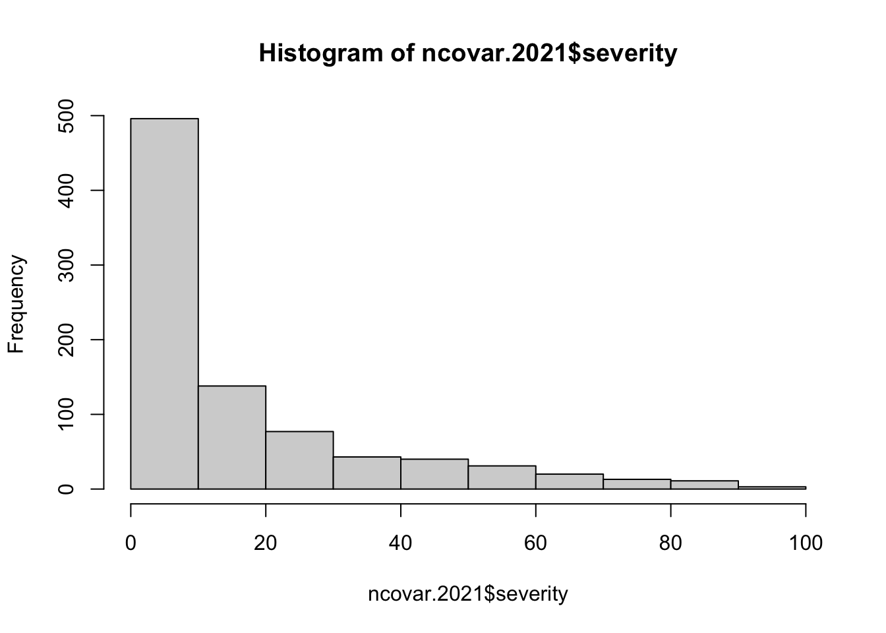
Next code produces four levels of CLS severity:
| Severity [%] | Category |
|---|---|
| 0 - 1 | 0 |
| 1 - 10 | 1 |
| 10 - 20 | 2 |
| 20 - 30 | 3 |
| 30 - 40 | 4 |
| 40 - 50 | 5 |
| 50 - 100 | 6 |
fcovar.2021 <- ncovar.2021 %>% mutate(category=cut(severity, breaks=c(0,1, 10, 20, 30,40, 50, 100), labels=c(0,1,2,3,4,5,6)))What we got?
summary(fcovar.2021$category) 0 1 2 3 4 5 6 NA's
188 212 138 77 43 40 78 96 Note that the distribution of values at each disease level is not balanced.
8.5.11 Write 2021 csv files
write_csv(
ncovar.2021,
"data/cercospora_data/ncovar_2021.csv",
na = "NA",
col_names = TRUE,
append = FALSE
)write_csv(
fcovar.2021,
"data/cercospora_data/fcovar_2021.csv",
na = "NA",
col_names = TRUE,
append = FALSE
)In this first part we have conducted a very important task: to translate UAV multispectral imagery and CLS severity ground data into a single table storing spectral covariates and severity classes which we will use next for building a prediction model.
8.5.12 Machine learning model
Now we will train & test a machine learning model to estimate qualitative levels of CLS disease severity using the previously created dataset.
8.5.12.1 Software setup
Let’s start by cleaning up R memory:
rm(list=ls())Then, we need to install several packages (if they are not installed yet):
list.of.packages <- c("readr","terra", "tidyterra", "stars", "sf", "leaflet", "leafem", "dplyr", "ggplot2", "tidymodels", "xgboost", "tune")
new.packages <- list.of.packages[!(list.of.packages %in% installed.packages()[,"Package"])]
if(length(new.packages)) install.packages(new.packages)Now, let’s load all the required packages:
library(readr)
library(terra)
library(tidyterra)
library(stars)
library(sf)
library(leaflet)
library(leafem)
library(dplyr)
library(ggplot2)
library(tidymodels)
library(xgboost)
library(tune)What files are in the data folder under the current path:
list.files("data/cercospora_data") [1] "CLS_DS.csv" "D0_2021.csv" "D1_2021.csv"
[4] "D2_2021.csv" "D3_2021.csv" "D4_2021.csv"
[7] "fcovar_2021.csv" "multispec_2021_2022" "multispec_2023"
[10] "ncovar_2021.csv" "README.md" Let’s remind that fcovar_2021.csv is the file containing the dataset we created previously. We will use the readr package to read the data as a tibble:
covar21 <- read_csv("data/cercospora_data/fcovar_2021.csv",
col_types = cols(category = col_character())) %>%
drop_na()What we got?
covar21# A tibble: 504 × 16
Plot year date severity new blue green red redge nir ndvi
<dbl> <dbl> <chr> <dbl> <date> <dbl> <dbl> <dbl> <dbl> <dbl> <dbl>
1 1 2021 D1 0.25 2021-07-15 0.0205 0.0502 0.0297 0.134 0.319 0.788
2 1 2021 D2 0.9 2021-07-20 0.0211 0.0532 0.0363 0.162 0.406 0.811
3 1 2021 D3 4.58 2021-08-02 0.0246 0.0583 0.0334 0.204 0.467 0.852
4 1 2021 D4 8.75 2021-08-25 0.0324 0.0624 0.0707 0.133 0.224 0.526
5 2 2021 D1 0.75 2021-07-15 0.0186 0.0505 0.0311 0.132 0.306 0.781
6 2 2021 D2 3.68 2021-07-20 0.0211 0.0563 0.0369 0.157 0.376 0.788
7 2 2021 D3 12.4 2021-08-02 0.0223 0.0563 0.0340 0.192 0.409 0.825
8 2 2021 D4 20.8 2021-08-25 0.0322 0.0642 0.0736 0.131 0.213 0.487
9 3 2021 D1 2.92 2021-07-15 0.0198 0.0535 0.0329 0.132 0.302 0.764
10 3 2021 D2 7.38 2021-07-20 0.0218 0.0591 0.0387 0.163 0.388 0.784
# ℹ 494 more rows
# ℹ 5 more variables: ndre <dbl>, cire <dbl>, sipi <dbl>, mndvi <dbl>,
# category <chr>We will change data type for the category column from character to factor:
covar21$category <- as.factor(covar21$category)Let’s see a summary of the dataset:
summary(covar21) Plot year date severity
Min. : 1.00 Min. :2021 Length:504 Min. : 0.025
1st Qu.:10.00 1st Qu.:2021 Class :character 1st Qu.: 0.750
Median :20.50 Median :2022 Mode :character Median : 4.312
Mean :20.51 Mean :2022 Mean : 9.364
3rd Qu.:30.00 3rd Qu.:2023 3rd Qu.:13.600
Max. :40.00 Max. :2023 Max. :60.750
new blue green red
Min. :2021-07-07 Min. :0.01718 Min. :0.04180 Min. :0.02762
1st Qu.:2021-07-15 1st Qu.:0.02095 1st Qu.:0.05593 1st Qu.:0.03299
Median :2021-07-20 Median :0.02252 Median :0.05849 Median :0.03675
Mean :2021-07-29 Mean :0.02433 Mean :0.05910 Mean :0.04343
3rd Qu.:2021-08-02 3rd Qu.:0.02736 3rd Qu.:0.06217 3rd Qu.:0.04706
Max. :2021-08-25 Max. :0.03781 Max. :0.07335 Max. :0.08514
redge nir ndvi ndre
Min. :0.1147 Min. :0.1793 Min. :0.4283 Min. :0.1995
1st Qu.:0.1382 1st Qu.:0.2817 1st Qu.:0.6740 1st Qu.:0.3118
Median :0.1533 Median :0.3467 Median :0.7835 Median :0.3717
Mean :0.1580 Mean :0.3369 Mean :0.7294 Mean :0.3493
3rd Qu.:0.1719 3rd Qu.:0.3982 3rd Qu.:0.8198 3rd Qu.:0.3981
Max. :0.2318 Max. :0.4795 Max. :0.8664 Max. :0.4413
cire sipi mndvi category
Min. :-0.6464 Min. :-4.579 Min. :-1.08586 0:153
1st Qu.:-0.4919 1st Qu.: 2.794 1st Qu.:-0.39874 1:176
Median :-0.4192 Median : 3.228 Median :-0.08584 2:105
Mean :-0.4153 Mean : 3.166 Mean :-0.17603 3: 32
3rd Qu.:-0.3370 3rd Qu.: 3.442 3rd Qu.: 0.04676 4: 17
Max. :-0.2065 Max. : 6.155 Max. : 0.58122 5: 13
6: 8 Now, we will filter several columns of this tibble using the dplyr package. First, get the column names:
names(covar21) [1] "Plot" "year" "date" "severity" "new" "blue"
[7] "green" "red" "redge" "nir" "ndvi" "ndre"
[13] "cire" "sipi" "mndvi" "category"Now, the selection:
covar21 %>% select(Plot,ndvi,ndre, cire, sipi, mndvi, category) -> covarLet’s check what we get:
covar# A tibble: 504 × 7
Plot ndvi ndre cire sipi mndvi category
<dbl> <dbl> <dbl> <dbl> <dbl> <dbl> <fct>
1 1 0.788 0.398 -0.377 3.23 0.0206 0
2 1 0.811 0.422 -0.492 3.29 -0.170 0
3 1 0.852 0.394 -0.609 2.73 -0.933 1
4 1 0.526 0.260 -0.265 3.84 0.0698 1
5 2 0.781 0.392 -0.362 3.28 0.0250 0
6 2 0.788 0.401 -0.457 3.31 -0.0483 1
7 2 0.825 0.362 -0.529 2.63 -0.470 2
8 2 0.487 0.242 -0.249 4.15 0.164 3
9 3 0.764 0.382 -0.358 3.25 0.00614 1
10 3 0.784 0.399 -0.476 3.27 -0.0954 1
# ℹ 494 more rows8.5.12.2 CLS classification using machine learning (ML)
The overall process to classify the crop disease under study will be conducted using the tidymodels framework which is an extension of the tidyverse suite. It is especially focused towards providing a generalized way to define, run and optimize ML models in R. See https://rstudio-connect.hu.nl/caait/
8.5.12.2.1 Exploratory analysis
As a first step in modeling, it’s always a good idea to plot the data.
Let’s try a boxplot:
plot <- ggplot(covar, aes(x=category, y=mndvi, color = category))+
geom_boxplot()+
r4pde::theme_r4pde()+
theme(legend.position = "none" )
plot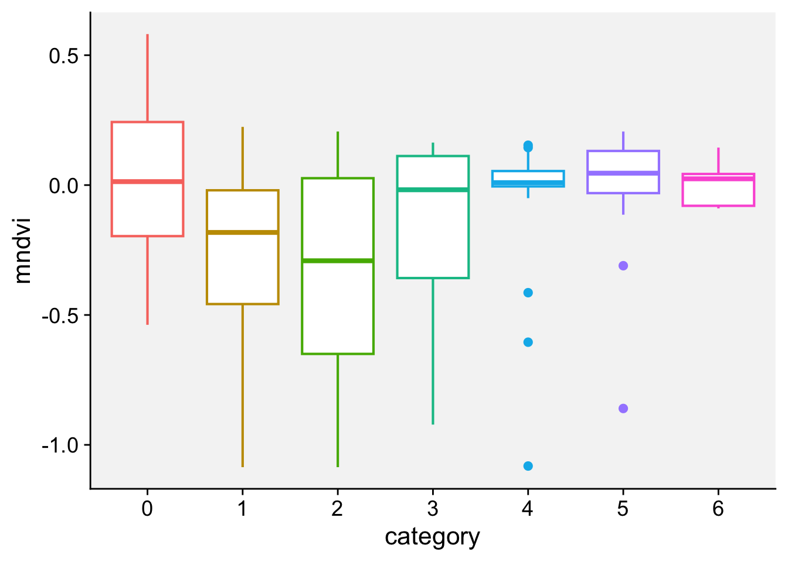
Next, we will do a scatterplot to visualize the relationship between the ndvi and mndvi indices:
ggplot(covar) +
aes(x = ndvi, y = mndvi, color = category) +
geom_point(shape = 16, size = 3) +
labs(x = "ndvi", y = "mndvi", color = "Severity category") +
r4pde::theme_r4pde()+
theme(legend.position = "top")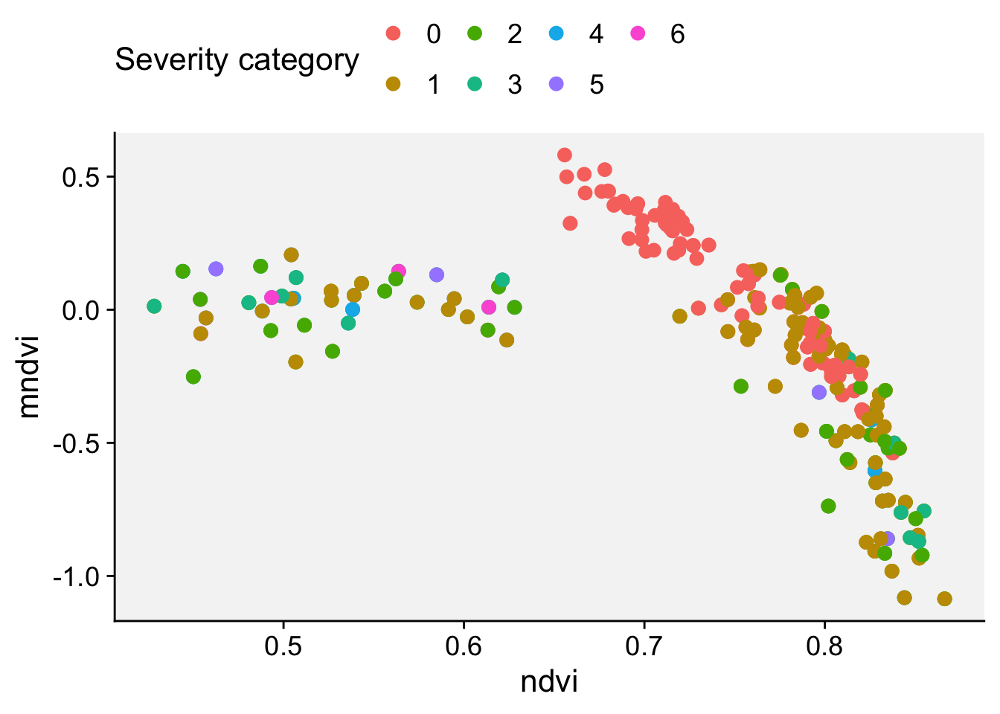
8.5.12.2.2 Splitting the data
Next step is to divide the data into a training and a test set. The set.seed() function can be used for reproducibility of the computations that are dependent on random numbers. By default, the training/testing split is 0.75 to 0.25.
set.seed(42)
data_split <- initial_split(data = covar)
data_train <- training(data_split)
data_test <- testing(data_split)Let’s check the result:
data_train# A tibble: 378 × 7
Plot ndvi ndre cire sipi mndvi category
<dbl> <dbl> <dbl> <dbl> <dbl> <dbl> <fct>
1 13 0.736 0.380 -0.316 3.49 0.243 0
2 37 0.714 0.357 -0.371 3.53 0.307 0
3 4 0.789 0.390 -0.389 3.15 -0.0687 1
4 39 0.798 0.408 -0.408 3.29 -0.135 1
5 19 0.807 0.413 -0.501 3.29 -0.293 1
6 19 0.595 0.237 -0.301 1.80 0.0417 4
7 37 0.809 0.420 -0.483 3.32 -0.167 1
8 31 0.820 0.385 -0.508 2.86 -0.376 1
9 40 0.562 0.280 -0.318 3.88 0.116 2
10 32 0.428 0.214 -0.206 4.22 0.0134 2
# ℹ 368 more rows8.5.12.2.3 Defining the model
We will use a gradient boosting machine algorithm which seems a robust algorithm for different applications.
spec_lr <-
boost_tree(
mode = "classification",
trees=1000,
#tree_depth = tune::tune(),
#learn_rate = tune::tune(),
#loss_reduction = tune::tune()
) %>%
set_engine("xgboost", objective = "multi:softprob", eval_metric = "mlogloss",) 8.5.12.2.4 Defining the recipe
The recipe() function to be used here has two arguments:
A formula. Any variable on the left-hand side of the tilde (~) is considered the model outcome (here, outcome). On the right-hand side of the tilde are the predictors. Variables may be listed by name, or you can use the dot (.) to indicate all other variables as predictors.
The data. A recipe is associated with the data set used to create the model. This will typically be the training set, so data = data_train here.
recipe_lr <-
recipe(category ~ ., data_train) %>%
add_role(Plot, new_role = "id") |>
step_zv(all_predictors()) |>
step_corr(all_predictors())8.5.12.2.5 Model performance metrics
Next, we need to specify what we would like to see for determining the performance of the model. Different modelling algorithms have different types of metrics. Because we have a multiclass classification problem (different categories of severity), we will chose the accuracy evaluation metric here.
8.5.12.2.6 Combine model specification and recipe into a workflow
We will want to use our recipe across several steps as we train and test our model. We will:
Process the recipe using the training set: This involves any estimation or calculations based on the training set. For our recipe, the training set will be used to determine which predictors should be converted to dummy variables and which predictors will have zero-variance in the training set, and should be slated for removal.
Apply the recipe to the training set: We create the final predictor set on the training set.
Apply the recipe to the test set: We create the final predictor set on the test set. Nothing is recomputed and no information from the test set is used here; the dummy variable and zero-variance results from the training set are applied to the test set.
To simplify this process, we can use a model workflow, which pairs a model and recipe together. This is a straightforward approach because different recipes are often needed for different models, so when a model and recipe are bundled, it becomes easier to train and test workflows. We’ll use the workflows package from tidymodels to bundle our model with our recipe.
Now we are ready to setup our complete modelling workflow. This workflow contains the model specification and the recipe.
wf_cls_wilt <-
workflow(
spec = spec_lr,
recipe_lr
)
wf_cls_wilt══ Workflow ════════════════════════════════════════════════════════════════════
Preprocessor: Recipe
Model: boost_tree()
── Preprocessor ────────────────────────────────────────────────────────────────
2 Recipe Steps
• step_zv()
• step_corr()
── Model ───────────────────────────────────────────────────────────────────────
Boosted Tree Model Specification (classification)
Main Arguments:
trees = 1000
Engine-Specific Arguments:
objective = multi:softprob
eval_metric = mlogloss
Computational engine: xgboost 8.5.12.2.7 Fitting the GBM regression model
Now we use the workflow previously created to fit the model on our training data. We use the training partition of the data.
fit_lr <- wf_cls_wilt %>%
fit(data = data_train)Let’s check the output:
fit_lr══ Workflow [trained] ══════════════════════════════════════════════════════════
Preprocessor: Recipe
Model: boost_tree()
── Preprocessor ────────────────────────────────────────────────────────────────
2 Recipe Steps
• step_zv()
• step_corr()
── Model ───────────────────────────────────────────────────────────────────────
##### xgb.Booster
call:
xgboost::xgb.train(params = list(eta = 0.3, max_depth = 6, gamma = 0,
colsample_bytree = 1, colsample_bynode = 1, min_child_weight = 1,
subsample = 1, num_class = 7L, objective = "multi:softprob",
nthread = 1, eval_metric = "mlogloss"), data = x$data, nrounds = 1000,
evals = x$watchlist, verbose = 0)
# of features: 5
# of rounds: 1000
callbacks:
evaluation_log
evaluation_log:
iter training_mlogloss
<num> <num>
1 1.2467716
2 1.0787093
--- ---
999 0.4083667
1000 0.4083651Now, we will use the fitted model to estimate CLS severity in the training data:
rf_training_pred <-
predict(fit_lr, data_train) %>%
bind_cols(predict(fit_lr, data_train) %>%
# Add the true outcome data back in
bind_cols(data_train %>%
select(category)))New names:
• `.pred_class` -> `.pred_class...1`
• `.pred_class` -> `.pred_class...2`What we got?
names(rf_training_pred) <- c (".pred_class_1", ".pred_class_2", "category")Let’s estimate the training accuracy:
rf_training_pred %>% # training set predictions
accuracy(truth = category, .pred_class_1) -> acc_train
acc_train# A tibble: 1 × 3
.metric .estimator .estimate
<chr> <chr> <dbl>
1 accuracy multiclass 0.751The accuracy of the model on the training data is 0.75 which is above 0.5 (mere chance). This basically means that the model was able to learn predictive patterns from the training data. To see if the model is able to generalise what it learned when exposed to new data, we evaluate the model on our hold-out (or so-called test data). We created a test dataset when splitting the data at the start of the modelling.
8.5.12.2.8 Evaluating the model on the test data
Now, we will use the fitted model to estimate health status in the testing data:
lr_testing_pred <-
predict(fit_lr, data_test) %>%
bind_cols(predict(fit_lr, data_test, type = "prob")) %>%
bind_cols(data_test %>% select(category))What we got:
lr_testing_pred# A tibble: 126 × 9
.pred_class .pred_0 .pred_1 .pred_2 .pred_3 .pred_4 .pred_5 .pred_6 category
<fct> <dbl> <dbl> <dbl> <dbl> <dbl> <dbl> <dbl> <fct>
1 2 1.56e-5 1.05e-3 9.99e-1 5.43e-6 2.96e-5 3.55e-6 2.33e-6 2
2 3 2.40e-5 2.93e-4 4.99e-1 4.99e-1 8.07e-4 1.14e-3 6.02e-5 3
3 1 3.00e-3 9.97e-1 5.38e-6 1.11e-6 9.97e-6 6.54e-6 8.82e-7 0
4 3 2.43e-5 2.72e-3 6.49e-4 9.96e-1 1.28e-4 3.10e-4 5.86e-6 2
5 1 4.27e-5 9.63e-1 1.04e-2 2.59e-2 1.75e-4 3.86e-4 9.15e-6 2
6 1 9.07e-2 9.09e-1 3.17e-5 4.32e-6 2.72e-5 8.60e-6 6.71e-6 0
7 1 4.37e-2 9.56e-1 3.99e-5 1.10e-5 1.36e-5 6.58e-6 5.15e-6 1
8 1 8.56e-6 9.99e-1 4.81e-5 7.20e-4 2.05e-5 4.20e-6 1.44e-6 1
9 0 9.96e-1 1.87e-3 1.26e-3 2.29e-4 1.79e-4 1.52e-5 1.19e-5 1
10 1 1.56e-3 9.98e-1 6.61e-6 7.14e-7 4.52e-6 1.52e-6 1.11e-6 1
# ℹ 116 more rowsLet’s compute the testing accuracy:
lr_testing_pred %>% # test set predictions
accuracy(category, .pred_class)# A tibble: 1 × 3
.metric .estimator .estimate
<chr> <chr> <dbl>
1 accuracy multiclass 0.484The resulting accuracy is much lower than the accuracy on the training data. This means that we would need to figure out how to improve our classification model.
## Let's plot the AUC-ROC
lr_testing_pred %>%
conf_mat(truth = category, .pred_class) -> cm
cm Truth
Prediction 0 1 2 3 4 5 6
0 24 11 0 0 0 0 0
1 16 23 9 2 1 1 0
2 0 8 10 7 1 0 2
3 0 1 3 4 0 1 0
4 0 0 0 0 0 0 0
5 0 0 1 0 1 0 0
6 0 0 0 0 0 0 0Note what are the disease categories more difficult to discriminate.
In this section we trained and tested a gradient boosting model (GBM) using three spectral indices as predictor variables (i.e. NDVI, NDRE, CIRE, SIPI, and MNDVI) obtained from imagery and field data. Accuracy metrics show that both data & model need improvement.
Some ideas for further experiments: - Include data collected in 2022 and 2023 - Refine CLS severity categories (see (Del Ponte et al. 2019)) - Compute other vegetation indices as advised in relevant literature - Compute other covariates (e.g. image texture metrics)
This section illustrated how to use VIs derived from UAV-based multispectral imagery and ground data to develop an classification model for estimating CLS in table beet. The results showed that a gradient boosting machine model is unable to estimate severity from several VIs with a good accuracy. We can explore the use of additional covariates to improve accuracy of the initial model.
8.6 Summary
We have completed a journey that hopefully may serve as foundation to apply remote sensing data and techniques to infer information useful for monitoring crop diseases.
Our journey consisted of three stages. In the first section we reviewed basic remote sensing concepts and provided a summary of applications of remote sensing of crop diseases. In the second section we navigated a case study on identification of banana Fusarium wilt from multispectral UAV imagery. In the third section we moved to a case study dealing with estimation of cercospora leaf spot disease severity on table beet. For the two case studies we used datasets publicly available.
Now, it is time to conclude with several reflections about: (i) what we learned in this chapter; (ii) what are the potential and limitations of remote sensing for identification & monitoring crop diseases; and (iii) what are main challenges to overcome to advance the use of remote sensing techniques for identification and quantification of crop diseases.
8.6.1 Lesson learned in this journey
First of all, we started to become familiar with concepts and techniques that can guide us in future studies focused on the use of remote sensing for crop disease monitoring. Although they are only the tip of the remote sensing iceberg, which we must know in depth, they represent part of the foundation necessary to be successful in any research related to the topic of this chapter.
Along the way, we learned to use some R libraries that allow us to: (i) read, visualize and process multispectral images and geospatial data; (ii) merge raster and vector data and extract spectral covariates related to plant biophysical, biochemical, and functional traits; and (iii) apply machine learning algorithms to infer information useful for plant disease identification and quantification.
The results obtained in our hands-on activities suggest that the application of machine learning algorithms to learning from data is driven by an iterative process: starting from an initial workflow, users need to iteratively modify their workflow, based on previous results, to improve performance.
We have learned that, in order to use data properly, research data needs to be fully described and documented. Otherwise, users may become frustrated or lost in guessing, cleaning, and pre-processing tasks. We have also learned that if the code is well documented, it is feasible to reuse it in future studies.
8.6.2 Potential and limitations of remote sensing for crop disease monitoring
A variety of remote sensing (RS) devices can be used to obtain data on the spectral response of plants and crops to diseases and insect damage. Processing and analyzing such data allows to estimate information useful for monitoring crops and analysing different stages of plant health. As individual devices have some limitations, multimodal remote sensing data & techniques (i.e. reflectance, fluorescence, thermal, microwave, lidar, multiangular sensing) are increasingly being used in research.
In the multimodal setting, data from different platforms & instruments are used together to obtain a better outcome. Multimodal methods allow for the integration of spectral responses from different & complementary electromagnetic radiation ranges, allowing to quantify different plant responses (e.g. stomatal closure, increased respiration, decreased chlorophyll, altered pigments, modified biochemistry, photosynthetic inhibition, altered growth, modified leaf angle, water content), and analyzing them to obtain a comprehensive understanding of disease progression, including eventual recovery. By using multimodal methods, it is possible to obtain a more accurate and detailed analysis of crop conditions, leading to advanced knowledge, improved decision-making and ultimately, better crop health management.
8.6.3 Main challenges to overcome
Building more resilient agricultural systems requires concurrent and near-real-time and reliable crop information for effective decision making. Using remote sensing data & techniques for monitoring crop health can become a relevant method to derive crop information at leaf, canopy, field, and farm scales.
In spite of the increasing literature reporting the application of remote sensing for monitoring crop diseases, it seems that there is a lack of open, transparent and reproducible data and methods to ensure a robust evaluation of performance, reliability and generalization of machine learning and deep learning models, a necessary pre-requisite to safely advance the applicability of remote sensing for crop monitoring in the field.
To fully realize the potential of remote sensing for estimating crop health status, there is a need of reliable ground truth data to enable both data calibration (i.e. linking in-situ to remote values) and accuracy assessment of estimations. Since field measurements require a lot of work and time, there is always a risk that the sampling is not correct (e.g. not enough samples, incorrect sample location, or the sampled area does not match the sensor footprint).
Both collaborative research and crowdsourcing could become a solution to overcome the restrictions of ground-truth data accessibility as well as the lack of open, transparent, and reusable remote sensing data & workflows. It is anticipated that joint multidisciplinary research as well as user participation in the complete process of crop monitoring from remote sensing could improve the reliability of crop health information.